经典书导读
软件工程 · 系统设计 · UI/UX · 产品经理 · 中国历史 · 建筑学 · 艺术 · 主理人五星 · 主理人四星 · 主理人心愿。每本书章节结构严格对齐原书目录，拒绝空话杜撰。
软件工程
软件工程就是研究怎么把写代码这件事，从“一个人灵光一闪”变成“一群人稳定交付”的学问——管的不只是代码，更是人、进度和复杂度。

《人月神话》
IBM 超级大项目的血泪总结：软件项目为什么总延期，加人为什么救不了它。

《人件》
软件项目最大的问题不在技术，在人。怎么管好人这个最贵资产，而不是把程序员当零件用。

《代码大全（第2版）》
程序员案头武功秘籍：从变量命名到系统集成，教你把代码写得又结实又好懂。

《程序员修炼之道》
程序员的内功心法：不只教写代码，更教怎么思考、怎么跟人打交道、怎么持续进步。

《重构：改善既有代码的设计》
把“能跑但难看”的代码，一小步一小步改成“好看又好改”：不改变功能，只改善结构。

《代码整洁之道》
Bob 大叔手把手教你写出“人能看懂”的代码：命名、函数、注释、格式，条条都是血泪经验。

《设计模式：可复用面向对象软件的基础》
GoF 四位大神总结的 23 个“前人踩坑换来的套路”：识别反复出现的问题，直接用被验证过的方案，不用重新发明轮子。

《UNIX编程艺术》
讲“怎么写出像 UNIX 那样优雅、耐用、历久弥新软件”的设计哲学书。

《编程珠玑》
用真实故事教你“怎么把程序写对、写快、写小”的算法思维书。

《领域驱动设计》
在一团乱麻的复杂业务里，用“模型”把业务理清楚、让代码跟上业务的设计方法论。
系统设计
系统设计是研究“怎么把软件系统搭得又稳、又快、还好改”的学问：数据放哪、机器挂了怎么办、用户涨十倍怎么办、代码越写越乱怎么办——这些问题的答案，都归它管。

《数据密集型应用系统设计》
数据系统的内功心法：数据库、缓存、消息队列看似五花八门。底层都在回答同一个问题——数据怎么存、怎么传、怎么算。

《架构整洁之道》
好架构跟用什么框架、数据库没关系。关键是把“做什么生意”的代码和“用什么技术”的代码分开，让生意逻辑不被技术细节绑架。

《微服务设计》
把大系统拆成小而独立的服务，各自独立开发上线：什么时候该拆、怎么拆、拆完怎么管，微服务领域的开山之作。

《企业应用架构模式》
OA、ERP、电商后台这类企业软件怎么写才不乱？前人踩过的坑提炼成“模式词汇表”，架构师案头的词典。

《SRE：Google运维解密》
Google运维团队的心法全公开：怎么让系统又稳又能快速迭代。运维不是救火，是工程。

《发布！软件的设计与部署》
测试环境好好的，一上线就崩？这本书专讲“生产环境”这头怪兽：它怎么杀死你的系统。以及怎么设计才能活下来。

《大型网站技术架构：核心原理与案例分析》
网站从小做到大，架构怎么跟着变：作者在阿里当过架构师，把淘宝这些大网站踩过的坑总结成人人能用的方法。

《凤凰项目：一个IT运维的传奇故事》
用小说讲DevOps：IT经理临危受命90天，靠“三步工作法”把烂摊子变成高效团队。

《微服务架构设计模式》
微服务“模式词典”：拆服务、服务间通信、分布式事务这些难题，一个个给出经过验证的解法。

《架构即未来》
“AKF扩展立方体”：系统撑不住了，加机器、拆功能还是分数据？三个轴指方向。
UI/UX 设计
说白了，UI/UX 设计就是研究“人怎么用东西”的学问：UI 管“长什么样”，UX 管“用起来顺不顺”。目标只有一个——让用户用产品时不费脑子、不犯错，还觉得顺手。

《点石成金》
做网站和 App 的实战小册子：别让用户动脑子，薄、幽默、句句拿来就能用。

《用户体验的要素》
用“五个层面”把产品工作从战略讲到视觉。产品经理和设计师的共同语言。
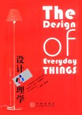
《设计心理学》
从“门总推错”讲起：用户犯错通常不是人笨，是设计蠢，好设计顺着人的心理来。
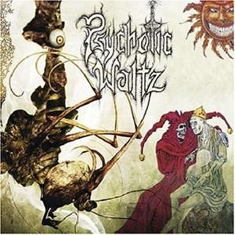
《交互设计精髓》
交互设计的开山之作：别堆功能，先搞清用户想干成什么事。
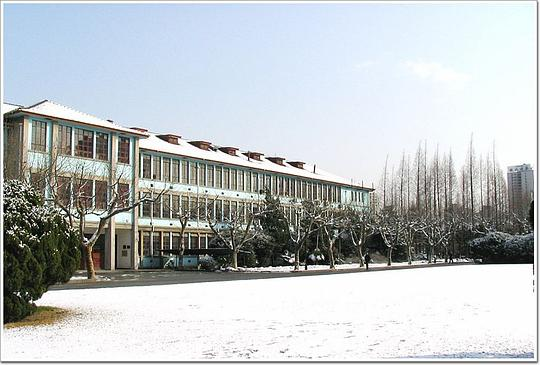
《写给大家看的设计书》
非设计师的救星：四个简单原则，让你的 PPT、海报从“业余”变“专业”。
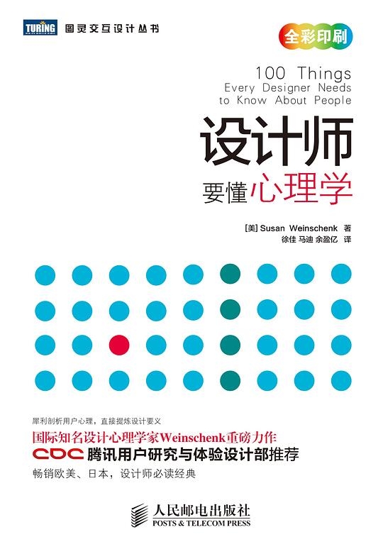
《设计师要懂心理学》
100 条“人就是这样”的心理学结论，每条翻译成一句设计该怎么做。
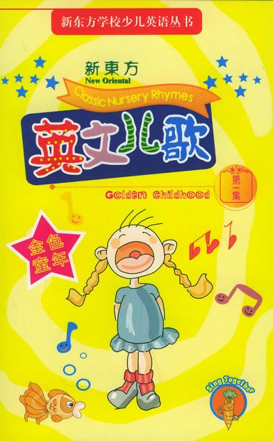
《情感化设计》
好用只是及格：让人掏钱、念念不忘的，是设计里的“情绪价值”。

《认知与设计》
把认知心理学翻译成界面设计规则：大脑怎么工作，界面就该怎么设计。

《微交互》
伟大的产品是细节堆出来的。这本书教你设计只有一秒钟的交互：开关、点赞、解锁、提示音。

《简单法则》
MIT 教授用十条法则讲简约。简约不是东西变少，是可以学会的设计手艺。
产品经理
产品经理就是那个要想清楚“做什么产品、为谁做、为什么值得做”的人——夹在用户、技术和生意之间，把一个个想法变成大家愿意用的产品。
《启示录》
产品经理实战手册：别闷头做功能，先验证用户要不要、能不能做出来，再动手。
《精益创业》
创业别靠赌：用最小成本、最快速度做实验，验证你的想法到底有没有人买单。
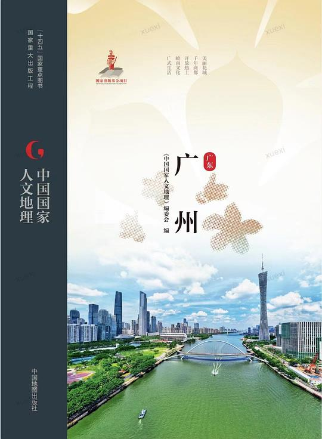
《俞军产品方法论》
中国“产品经理教父”俞军，把做产品还原成几个可以算账的公式：用户价值、交易设计、决策方法。

《人人都是产品经理》
阿里出身的苏杰，用一个真实项目的完整经历，带你走完从需求到上线的全过程——中国产品经理的入门圣经。

《创新者的窘境》
为什么管理越优秀、越听客户话的大公司，越容易被新技术干掉？哈佛教授用三个行业的真实历史回答这个问题。

《上瘾：让用户养成使用习惯的四大产品逻辑》
为什么你一无聊就想刷手机？作者把Facebook、Twitter、Pinterest们让人“上瘾”的套路，提炼成了一个四步循环模型。

《增长黑客》
“增长黑客”发明人亲笔：用数据和一次次小实验，让用户量滚雪球一样涨起来。而不是砸钱买广告。
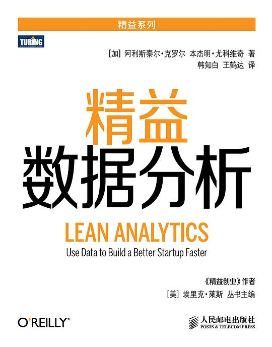
《精益数据分析》
教创业者看数据的书：别再盯虚荣指标了，每个阶段只看一个最重要的数。
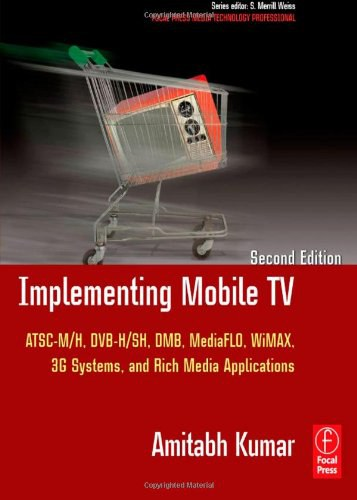
《用户故事与敏捷方法》
敏捷开发写需求的“圣经”：别写几十页没人看的文档了。一张小卡片加面对面交谈，再写下验收标准，就够了。
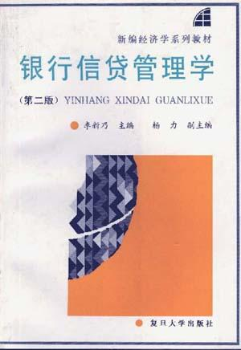
《定位》
营销学“圣经”：别再死磕“我的产品更好”。商战打的是用户脑子里的位置——谁先占住一个词，谁就赢。
中国历史
中国历史是读懂中国人行为逻辑与制度演进的底层密码：官僚机器怎么运转、权力与民意如何博弈、大一统帝国的得与失——这些过去的经验，至今依然在深刻塑造我们的当下。
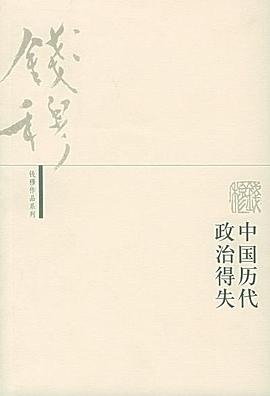
《中国历代政治得失》
五堂课讲透汉、唐、宋、明、清五朝制度演变：制度必须结合历史情境，防弊之法往往反成新弊。

《万历十五年》
平淡无奇的一年，却写尽了大明帝国制度性死结与个人奋斗的彻底破产。

《叫魂：1768年中国妖术大恐慌》
盛世之下的一场剪辫妖术谣言，扯下了专制君权、常规官僚与底层互害的遮羞布。

《天朝的崩溃：鸦片战争再研究》
基于原始中英档案的冷酷还原：鸦片战争的惨败，绝不是因为几个奸臣使坏。

《潜规则：中国历史中的真实游戏》
写清了中国传统社会在道德和法律之下，真正支配官场与民间的隐秘利害法则。

《置身事内：中国政府与经济发展》
看清中国当代经济奇迹与深层困局的底层逻辑：地方政府不是裁判，而是亲自下场的超级重资产玩家。
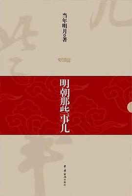
《明朝那些事儿》
用最鲜活的现代白话写透两百七十六年大明风云：历史本由活生生的人性写就，成功只有一种。
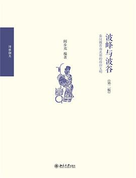
《波峰与波谷：秦汉魏晋南北朝的政治文明》
七百年政治制度的起伏脉络：从官僚帝国波峰，跌入门阀士族低谷，再经北朝涅槃重登隋唐巅峰。
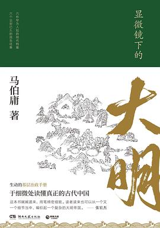
《显微镜下的大明》
从六起基层民间公案档案，透视明代帝国的毛细血管运转与官僚利益博弈。
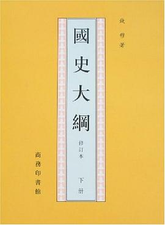
《国史大纲》
抗战烽火中写就的通史宗师经典：对本国历史抱有一种温情与敬意，读懂中华文明的生生不息。
建筑学
建筑学研究的是“空间如何容纳人与生活”的学问：从梁架营造到现代钢筋水泥，从单个房间的尺度到整条街道的呼吸——好建筑从不在于炫技，而在于让人在其中安居与从容。

《华夏意匠：中国古典建筑设计原理分析》
用现代建筑学原理重新解剖中国古典建筑：院落是核心细胞，木构架是比西方早千年的模数化预制体系。

《建筑空间组合论》
中国建筑教育第一经典教材：建筑的本质是空间，空间序列犹如凝固的交响乐。

《梁思成中国建筑史》
中国现代建筑学奠基之作：野外艰险测绘打破日本学界断言，确立中国木结构建筑的文法体系。

《走向新建筑》
现代主义建筑的旷世独立宣言：房屋是住人的机器，抛弃学院派虚伪的古典装饰！

《外部空间设计》
空间大师教你做有呼吸感的环境：外部空间绝不是残留空地，而是被精心雕琢的“积极空间”。

《建筑语汇》
把模糊的建筑灵感转化为清晰图形的速查字典：图解思考是建筑师最核心的思维武器。

《街道的美学》
街道是城市的起居室：从巴黎香榭丽舍到京都小巷，读懂真正宜人有温度的街道活力。

《建筑：形式、空间和秩序》
全球建筑院校人手一本的视觉语法圣经：点线面体、空间组织与六大秩序法则。

《建筑的复杂性与矛盾性》
后现代建筑运动的独立宣言：针锋相对反击“少就是多”，旗帜鲜明喊出“少就是无聊”！

《建筑模式语言》
设计界与软件工程跨界划时代圣经：归纳 253 个空间设计模式，让普通人也能创造鲜活宜居的环境。
艺术
艺术不是少数人的高深玄学，而是人类感知世界与表达自我的最高形式：从原始洞穴壁画到现代主义流派——学会观看艺术，本质是学会如何更敏锐、更丰盈地看待生活本身。

《艺术的故事》
全世界最负盛名的艺术史入门第一书：实际上没有艺术这种东西，只有艺术家。

《美的历史》
博学宗师艾柯纵论西方两千年审美变迁：美从来不是客观公式，而是时代文化的投射面具。

《观看之道》
二十世纪最具杀伤力的视觉批评经典：观看先于语言，但我们的眼睛早已被意识形态操控。

《艺术与视知觉》
格式塔心理学在艺术领域的终极圣经：视觉即思考，静止画面中蕴含着真实的心理力学张力！
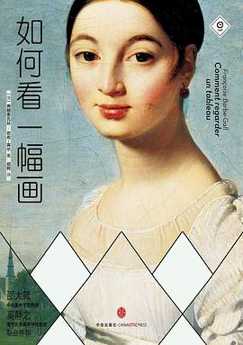
《如何看一幅画》
普通人逛美术馆的破冰解药：撕掉艺术史文凭的装腔作势，从第一眼直觉读懂画中玄机。
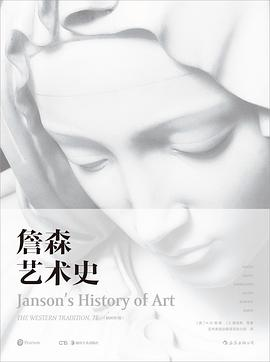
《詹森艺术史》
半个世纪全球艺术史教学第一权威巨著：建筑、雕塑与绘画三位一体，建立最坚实宏大的文明骨架。
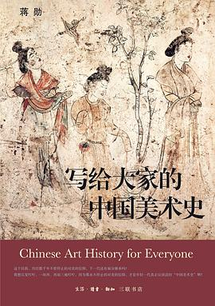
《写给大家的中国美术史》
蒋勋用最温润深情的文字唤醒东方美学基因：美是双手劳作的温度，是山水之间的心灵安顿。
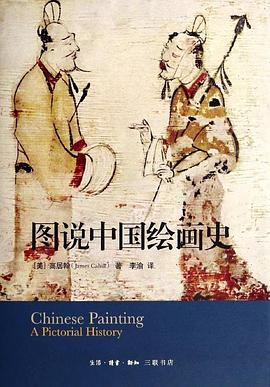
《图说中国绘画史》
海外中国艺术史巨擘传世名著：跳出传统笔墨玄学，用西方图像学清晰解剖中国画两千年风格演变之河。

《中国绘画三千年》
中美顶尖艺术史大家联袂巨制：融汇故宫鉴藏考据与西方现代视觉学，全景呈现三千年画史宏图。

《艺术哲学》
实证主义文艺学的经典奠基巨著：傅雷名译，艺术品是特定种族、时代与环境孕育的精神植物。
主理人五星精选
严选主理人豆瓣 5 星中经严格目录核实的 67 本社科、思维、人文、设计、技术非虚构名著，剔除纯漫画、字帖、诗集与虚构小说。

《乡土中国》
中国社会学与人类学奠基性传世名著。费孝通先生以敏锐的学术洞察力，对中国传统乡村社会结构进行了开创性剖析。全书从乡土本色、文字下乡、差序格局、家族、礼治秩序、长老统治等维度，深度提炼中国基层社会的文化基因与权力运行图景。

《硅谷之谜》
吴军博士系统解码硅谷创新基因的权威著作。本书深入剖析斯坦福大学的学术催化、沙丘路的风险投资机制、宽容失败与鼓励叛逆的文化氛围，揭示信息时代全球最具活力创新生态系统的底层逻辑。

《最后的耍猴人》
边缘江湖人的末路挽歌：摄影师马宏杰历时十二年贴身记录河南新野耍猴艺人的流浪史，直面底层生存与现代文明的残酷碰撞。

《原来你非不快乐》
华语词坛传奇填词人林夕的心灵随笔代表作。将与抑郁症长期搏斗的切身体会与佛学禅宗智慧相融，层层剖析现代人焦虑、内耗与执念的根源，点破‘放下手中的玩具，方能真正安睡’的人生真谛。

《城记》
首都规划半世纪的悲剧史诗：新华社记者王军历时十年调阅绝密档案与采访亲历者，详尽还原北京古城消逝与梁陈方案的历史风云。
《5%的改变》
心理学者李松蔚的破局之书：放弃一次性脱胎换骨的宏大执念，哪怕只在行动上撬动5%的微小改变，生活系统就会发生连锁反应。

《小家大变局》
居住空间重塑指南：前万科主创建筑师逯薇直面中国家庭结构巨变，以“大方厅”革命打破传统客厅局限，重构充满温情的全家聚居场。

《可能性的艺术》
比较政治学通识力作：政治学者刘瑜带你穿越全球数十个国家的治理实践，在比较的视野中勘测政治发展的边界、阵痛与多重可能。

《运气的诱饵》
赌博机背后的上瘾工程学：人类学家舒尔深入拉斯维加斯十五年，彻底扒光现代赌场与算法工程师如何设计“沉浸区”剥削人类心智。

《小家，越住越大3》
高颜值家居实操宝典：建筑师逯薇破除盲目跟风与名牌堆砌的家装陷阱，用科学公式化解配色、灯光、材质与墙面搭配难题。
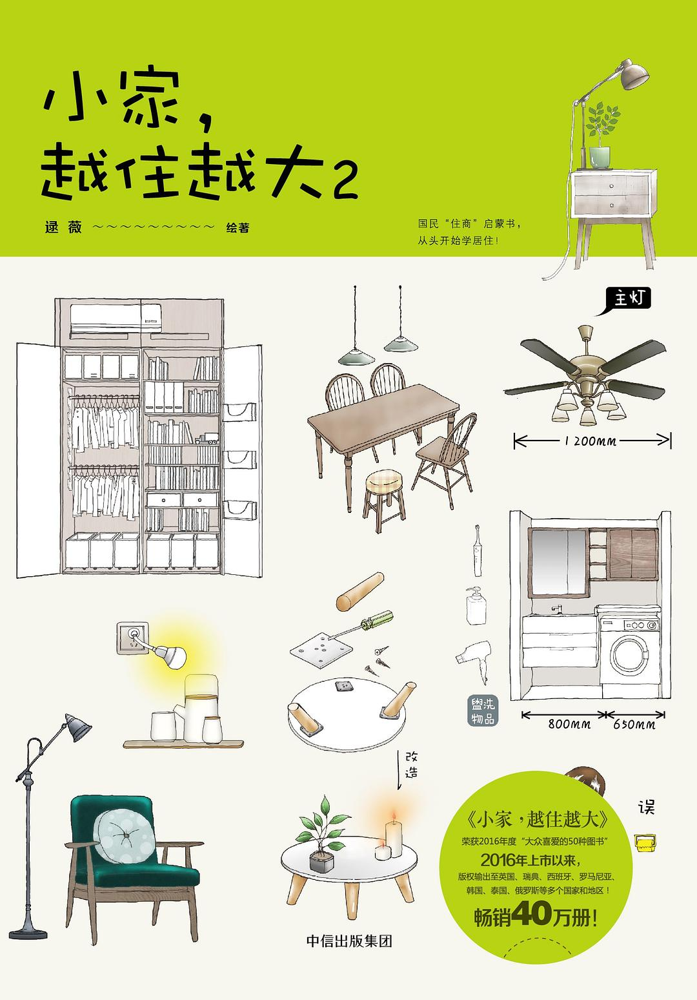
《小家，越住越大2》
居住痛点靶向破解：逯薇深入中国家庭最拥挤的厨卫衣帽间三大战区，以毫米级尺寸精算与人体工学，终结家务劳作与收纳噩梦。
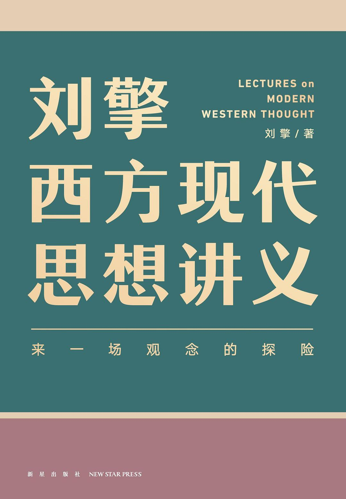
《刘擎西方现代思想讲义》
现代人精神危机的哲学解毒剂：刘擎教授系统梳理韦伯、尼采、萨特、阿伦特等近二十位大师思想，为虚无时代的灵魂寻找确凿安顿。

《与“众”不同的心理学》
国际公认的批判性思维与科学心理学入门经典。基思·斯坦诺维奇教授以犀利风趣的笔触，彻底厘清伪心理学与实证心理学的界限，系统传授可证伪性、控制变量、相关与因果、概率思维等核心科学方法论。
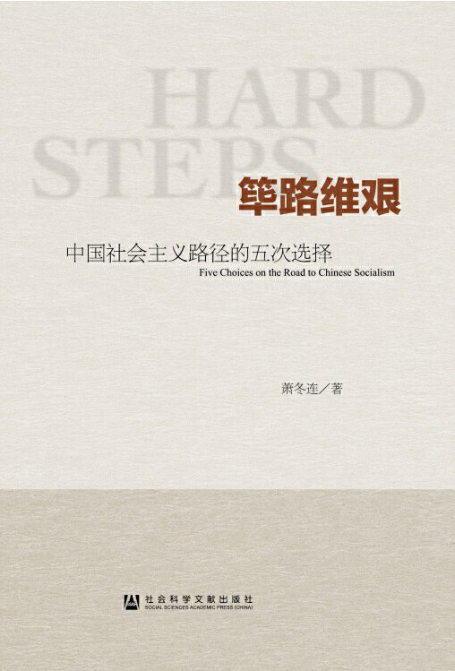
《筚路维艰》
中国现代道路五次转折实录：历史学家萧冬连以严谨史笔复盘新中国成立以来的重大路径选择，透视体制探索的曲折与代价。

《中国国家治理的制度逻辑》
洞察官僚体制运作的当代经典：社会学家周雪光提出“一统体制与有效治理”核心矛盾，深度透视基层政府共谋、运动式治理与名实分离的制度真相。

《优势谈判》
商业与生活博弈的实战兵法：国际谈判大师罗杰·道森倾囊相授，系统拆解开局、中局到终局的数十套心理招数与双赢心法。

《出神》
《出神》分为两部分——“散”和“文”。“散”的部分比较有特色，写的非常自由，没有任何预设的形式制约，能够最真实的表达本来就随意偶然的感触。不试图“成文”，不试图得出“结论”，缺少读者意识，是纯粹的“私写作”，带有喃喃自语式的真挚和亲切。以这样“自恋”的方式赢得那么多读者，这是令作者也感到极其惊喜。 自由的写作是最严肃的写作。由于完全是为了让自己满意而写，“散”文字是作者最为用心的作品。纯粹从文字和生命体验准确呼应的角度来看，这也是到目前为止作者自己最为满意的作品。其中包含了作者自己对文学的理解。 这些篇章看起来彼此无关、各自偶然，但是通篇读来，气息相通，可以触摸到作者真实深处的精神生活。 这是在可展示的前提下最大限度的真诚，在一个也许不够广大的人群中，这种真诚具有其特别的感染力和传播力。 “文”的部分选自2001年以来给媒体写的稿。 相对于“散”部分... (展开全部)

《现代艺术150年》
现代艺术通识第一书：BBC前艺术总编威尔·贡培兹以幽默毒舌之笔，梳理从马奈到班克西的流派接力，彻底讲透“这到底好在哪”。
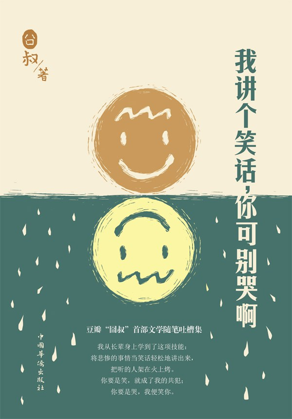
《我讲个笑话，你可别哭啊》
【编辑推荐】 我从长辈身上学到了这项技能：将悲惨的事情当笑话轻松地讲出来， 把听的人架在火上烤——你要是笑，就成了我的共犯；你要是哭，我便笑你。 ——囧叔 本书是豆瓣“囧叔”首部文学随笔吐槽集，作者善于观察世情世态，常用嬉笑怒骂，幽默且犀利的文笔来描写身边所见到的人、所发生的事，趣味盎然的人情世态，或叙或议或抒情，生活气息浓厚。全书内容尝试从每一个凡人身上，发掘出不凡的故事……更意在告诉读者“世界上根本就没有凡人、庸人，每个人都是一个庞大的故事的主角”。 【内容简介】 《我讲个笑话，你可别哭啊》是一本适合在除葬礼以外的任何场合阅读的随笔集。全书包含三个部分，作者从身边所识、心中所想和对世人的观察视角出发，用严肃的世界观和轻松的行文，将一出出正剧和悲剧当成笑话讲出来，以令人哭笑不得为目的，不择手段。作者热爱观察生活，有嘲笑一切的“不良倾向”，并致力于使... (展开全部)

《世间的盐》
《世间的盐》是高军（豆瓣网名：风行水上）出版的第一本书。他笔下的人与故事充满智趣。他有敏锐的触觉，观察细致入微，将日常的所见所闻，描摹得生动有趣。他俚俗掌故、吃喝玩乐、行走见识、家常咸淡、邻里小事，什么都可以拿来写，什么都可以拿来说；他似乎没有什么胆怯的东西，抓过来了就是十分有趣的见识；他兴味起落、挥笔飞白，都是文章，热闹里头自有真意趣在。

《你不知道的JavaScript (上卷)》
前端JS核心机制底层重塑：Kyle Simpson直击作用域、闭包、this指向与对象原型链，彻底终结浅尝辄止与诡异Bug。
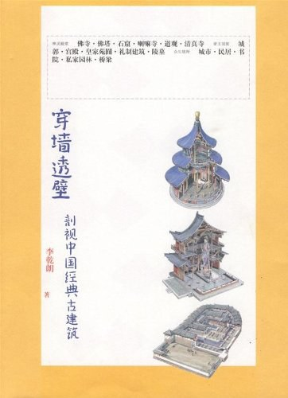
《穿墙透壁》
中国古建筑手绘解剖神作：古建筑泰斗李乾朗历时二十年，以惊绝的51幅剖面透视水彩图，为千年营造打开X光级的空间透视之门。
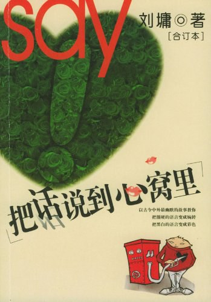
《把话说到心窝里》
《把话说到心窝里:合订本》通过最生动的故事和分析，教你如何—坏话好说、狠话柔说、大话小说；笑话冷说、重话轻说、急话缓说；长话短说、虚话实话、废话少说；把话说到心窝里！作者用一个个精彩的故事告之读者，在如今竞争激烈的社会里“说话技巧”的重要性。与上一本书探讨“说话技巧”不同的是，本册着重站在听话者的角度，从说话者的口气、用词等方面探测出“话中之话”、“弦外之音”，从而把握对方说话的真正用义。从“听话”中把握“说话”的主动权，把“我的话说到“你”的心窝里”。
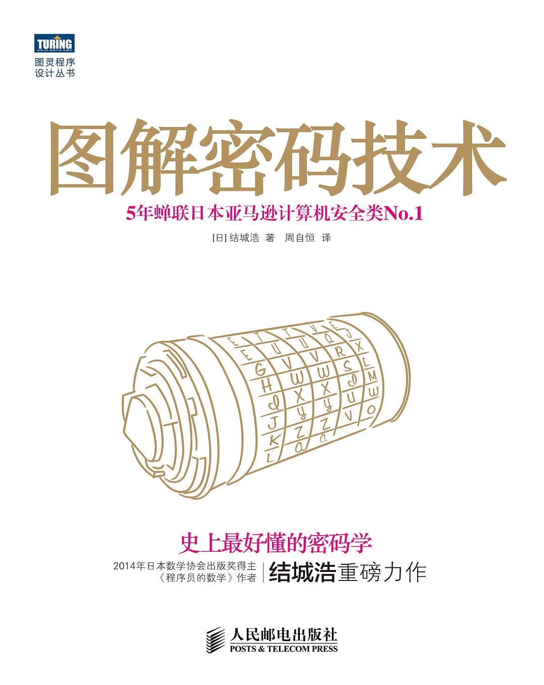
《图解密码技术》
现代信息安全启蒙第一书：日本科普宗师结城浩用生动图解与爱丽丝鲍勃故事，将对称密码、公钥体系与HTTPS安全基石彻底讲透。
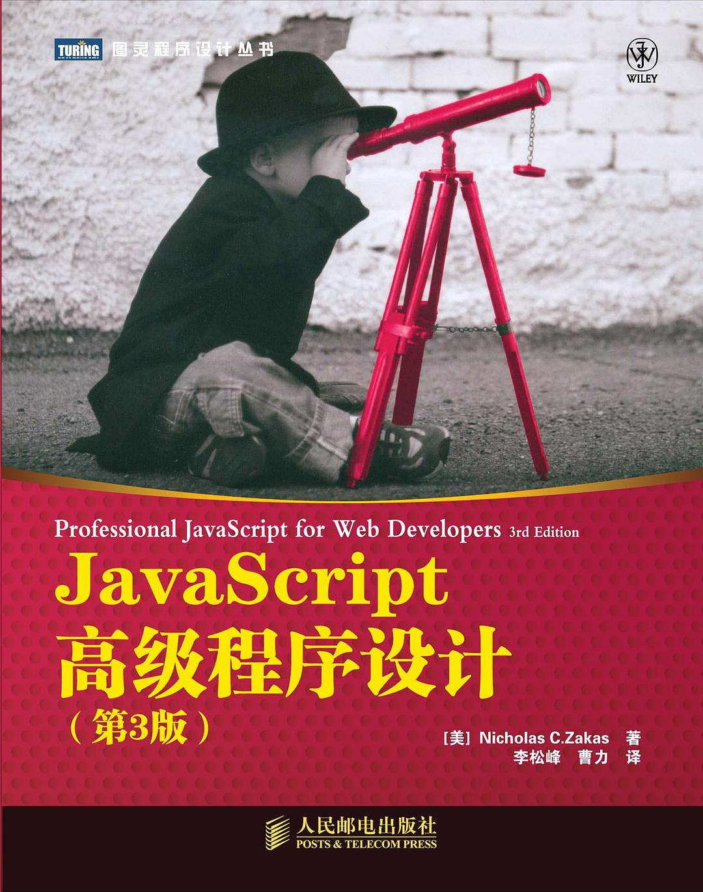
《JavaScript高级程序设计（第3版）》
前端工程师的红宝书圣经：Nicholas C. Zakas集大成之作，系统筑牢ECMAScript语法底座、DOM/BOM浏览器环境与事件异步机制。

《华尔街日报》是如何讲故事的
这本书解释了《华尔街日报》为什么产生了那么多令人惊叹的报道。 如果你是一个记者——这本书的前身是《华尔街日报》的内部讲座，专门培训那些为《华尔街日报》头版提供特稿的记者。它告诉新闻记者们一件事情，就是如何用高品质的报道吸引读者的注意力，并让这种注意力一直保持下去！ 如果你虽不是记者，但会时常用到写作——这本书会让你明白，到底是哪些元素让你听写的东西从本质上变得有趣和吸引人！ 所有被称为伟大的故事，都来自伟大的创意，几乎在所有伟大的故事创意中，都有一种人性的展示。
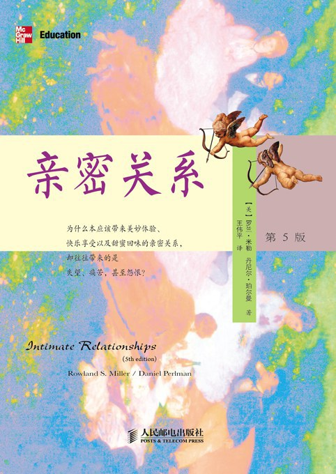
《亲密关系》
亲密关系领域的科学圣经：用严谨的心理学实证研究，撕开关于爱情、吸引力、冲突与背叛的情感迷思。
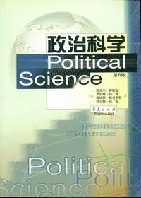
《政治科学》
这是一本被多个国家的高等院校广泛采用的政治学教科书，目前已出到第六版。全书“采取兼容并包的方法，而不刻意兜售任何单一的理论、概念框架或范式”，以科学、客观的态度分析不同的意识形态和政治体系，在认可美国民主体制的同时，更一针见血地批判了美国现实政治的弊端。 书中分政治基础、政治态度、政治互动、政治制度、政治行为五编，内容包括：关于政治的科学；民族、国家与政府；政治意识形态等。
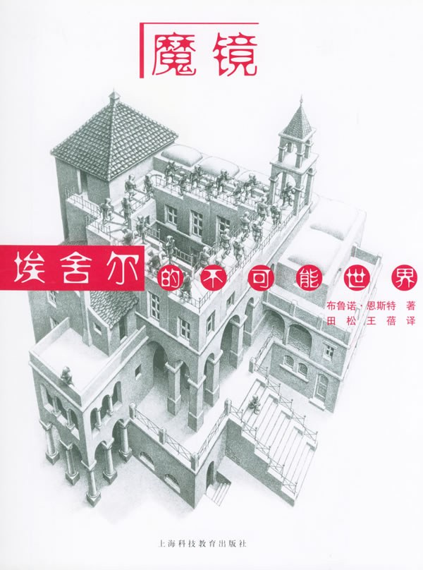
《魔镜》
本书运用优美的语言和精致的图片描绘了世界著名版画艺术家埃舍尔的生平、创作以及他对版画艺术的理解。埃舍尔的许多版画都源于悖论、幻觉和双重意义。自相缠绕的怪圈是他作品中经常出现的一个主题。他努力追求图景的完备而不顾它们的不一致性，或者说让那些不可能同时在场者同时出场。借此他创造了一个颇具魅力的“不可能世界”。埃舍尔对“不可能世界”的营造极其成功，使他在世界各地拥有众多的崇拜者，其中包括很多知名科学家，比如诺贝尔奖得主李政道就非常欣赏埃舍尔的艺术作品。
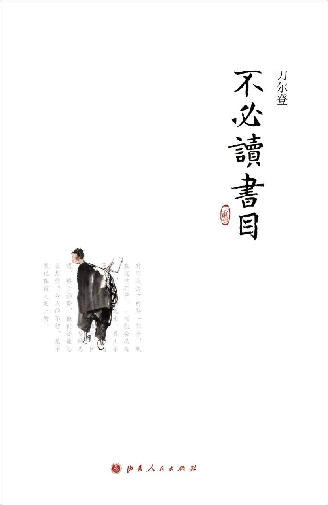
《不必读书目》
杂文大家刀尔登的祛魅之作：以现代常识和犀利毒舌，把国学神坛上的古圣先贤一一拉回人间。

《晚来寂静》
小说主体部分的时间跨度为1976年至2008年，第一人称和第三人称交替叙述。主要内容是主人公夏冲从4岁到31岁的经历、见闻，在此主要线索之外还有多条次要线索交替推进，如周围人的故事等等。就个性而言，夏冲是一个对悲剧非常敏感的人，发现周围生活中到处是被忽略的悲剧。他的父母、少年时代最好的朋友、朋友的母亲、高中同学乃至路人甲乙丙，都在各种悲剧之中。与传统的悲剧不同的只是这些悲剧往往被看作是理所当然，不足为奇。小说中也包含一个爱情故事，其实是半个，算是悲剧中的一抹暖色。女主人公是一个比男主人公更好的人物，她同样年轻、聪明，但更平静，也懂得安之若素。书名中有“寂静”二字，是因为主人公有三次拒绝跟任何人说话，一次是幼儿园时期，一次是高一，一次是31岁在四川独自旅行时。小说便从第三次“寂静”开始，次第展开倒叙。概括小说的核心意思，就是无论时代如何变化，这国家这生... (展开全部)

《余欢》
陈朗、杨如意、郭小营三个女孩围着一盘清清爽爽的土豆丝．陶醉地吃着，她们分别已经27岁，28岁和25岁。分别穿着红色、黑色和白色的裙子。她们最喜欢的食物分别是西瓜、西瓜和西瓜．而她们最讨厌的动物分别是蟑螂、蟑螂和蟑螂。她们有过的男朋友分别是3个、2个和O个。她们平均每哭一场的间隔分别是3天、5天和4天，但平均一天微笑的次数是29次、15次和138次。她们的政治立场分别是“自由主义”、”什么他妈的政治观“和”我希望熊猫永远不灭绝”。她们的理想分别是“一个悄悄在夜总会唱歌的著名学者”、“Max Sudio总裁的情妇”和“12个孩子的奶奶——这12个孩子的头发要有各种颜色”。她们对生活充满了斗志，虽然她们也不知道这斗志来自于信心还是恐惧。窗外是一个叫做纽约的沸腾的城市，而这座城市和它的沸腾，说到底，和她们没有什么关系。 ……

《自卑与超越》
个体心理学奠基之作：破除弗洛伊德式的宿命论，用“自卑感与补偿”重新拿回塑造自我的主动权。

《自私的基因》
演化生物学颠覆之作：个体不过是基因制造的生存机器，利他与博弈的背后全是不朽分子的生存算法。

《目送》
目送共由七十四篇散文组成，是为一本极具亲情、感人至深的文集。由父亲的逝世、母亲的苍老、儿子的离开、朋友的牵挂、兄弟的携手共行，写出失败和脆弱、失落和放手，写出缠绵不舍和绝然的虚无。正如作者所说：“我慢慢地、慢慢地了解到，所谓父女母子一场，只不过意味着，你和他的缘分就是今生今世不断地在目送他的背影渐行渐远。你站在小路的这一端，看着他逐渐消失在小路转弯的地方，而且，他用背影默默地告诉你，不用追。”
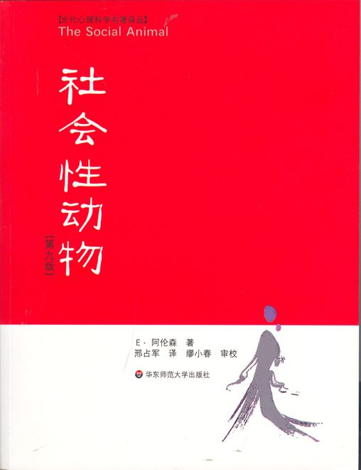
《社会性动物》
当代社会心理学的无冕之王：用一系列震撼实验，揭开人类在群体中的从众、偏见与自我辩护。
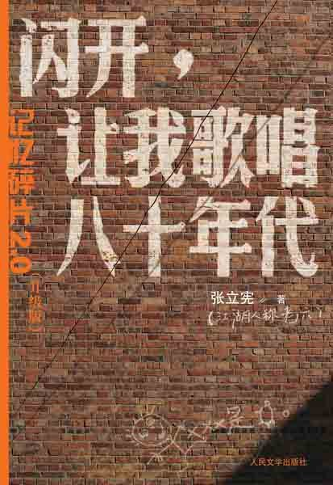
《闪开，让我歌唱八十年代》
八十年代，中国最后一个纯真年代。这本书是对这一纯真年代的终极回忆。 作者老六是生于1968年的“六八式”——所谓“生于六十年代，在八十年代经历青春，在九十年代讨生活、在本世纪负责任”的一代。这本书就是他的一部八十年代微观个人史，由十二章记忆碎片构成——关于麻将、关于校园、关于打架、关于毛片、关于评书、关于电影、关于足球、关于买碟、关于电脑…… 其实，何止“六八式”，任何一代人的青春，激情和痛苦都是一样的，他们对自己所处时代的感念之情也是一样的——一个人的青春在什么时代度过，那就是他最好的年代，所以，翻开本书的人，不是被记忆虐待得同声一叹，便是温暖到会心一笑： 我们一直以为活的是未来，其实拥有的只有回忆。 多少人害怕变老，多少人正在变老，多少人已经老了。当一切都已经地覆天翻，精神麻木的现代悲剧大幕拉开之时，多说一句都是多余： 闪开，让我们开始集体回忆。... (展开全部)

《撬动幸福》
行为经济学巨擘的幸福测量学：用科学实验颠覆“财富等于快乐”的错觉，教你用有限资源撬动最大幸福。

《浪潮之巅》
科技商业史上最宏大的全景史诗：看懂信息产业百年生死沉浮，掌握科技弄潮儿兴衰的底层律动。

《王小波全集（第一卷 杂文）》
当代汉语文学最清醒的智性标杆：用黑色幽默与纯粹理性，横扫愚蠢、道德狂热与思想禁锢。
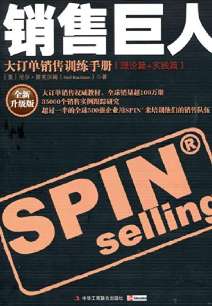
《销售巨人》
B2B 大客户复杂销售的圣经：打破传统逼单神话，用一套严密的 SPIN 提问逻辑彻底拿下大订单。

《我爱问连岳Ⅱ》
《我爱问连岳》是连岳在《上海一周》的专栏的结集，是专门为情感世界里迷途的羔羊指路的八卦文字。他总是能把别人的事儿说成自己的事，把自己的事儿说成别人的事，而且津津有味，侃侃而谈。

《男人的伎俩 女人的道行》
亲密关系情商必修课（再版名《爱的五种能力》）：走出两性控制与博弈的死局，用真正成熟的心智经营幸福。

《常识》
梁文道先生近两年来撰写的时评文字结集，谈及政治、民主、民族、教育、新闻自由、公民道德等社会诸多方面。文字风格犀利，文章主旨清晰、论述简洁有力，往往一针见血命中问题之要害，其文字在带给读者阅读快感之余，还催人省思，给人启示。本书名曰《常识》，正如梁氏自言：“本书所集，卑之无甚高论，多为常识而已。若觉可怪，是因为此乃一个常识稀缺的时代。”

《吃的真相》
《吃的真相》：欧阳应霁推崇的新美食学教材，美国食品工程博士破除国人饮食的迷信与偏见。饭桌上的盲从恐慌，都根源于不明真相。 任何一种食物都含有“多种氨基酸、多种维生素和微量元素”，并且“富含某种成分”。自然界的绝大多数动植物。都含有蛋白质、脂肪、碳水化合物、维生素以及矿物质。那些“美容圣品”里含有的任何一种成分。都会在最普通的食物中找到。甚至更为优越。人体是一个很复杂的整体，蔬菜水果也各自都是很复杂的整体。它们不为人类而生，所以不会“完美”地含有人体所需的所有营养成分。我们只是利用复杂的它们来满足我们复杂的需要。 大豆蛋白的确是一种很好的食品，但是它不能提供保健功能。也并不比喝豆浆、吃豆腐有更多的好处。我们倾向于认为祖宗传下来的东西总是好的。而对于现代工业则有抵触的心理。其实。按照科学指导进行的现代工业生产，完全可以吸收传统工艺中合理的部分。而改变不合... (展开全部)
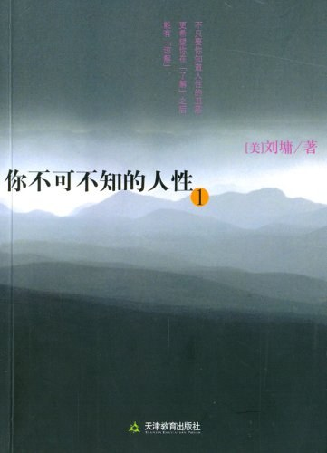
《你不可不知的人性》
《你不可不知的人性(1)》一本兼具深度、广度、力度与温度的力作。刘墉以“身边的小故事”和古今实例，一层层剖析真正的人生。它像一把手术刀，切到人心深处，先让你看清人性的毒瘤，再把毒瘤切除。它绝对是尖锐、露骨、血淋淋的，只是在血淋淋之后，希望带给你一种豁达。不只要你知道人性的丑恶。
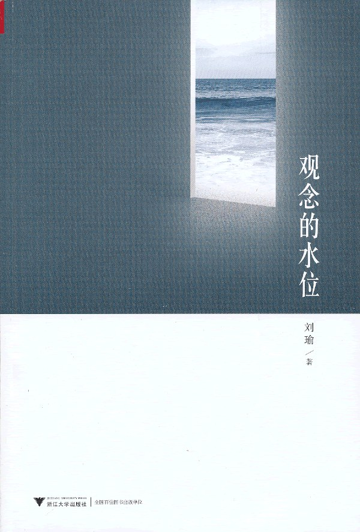
《观念的水位》
当代最具影响力的政治学随笔：当民主与法治的观念水位悄然上升，任何旧体制的堤坝都将无处藏身。
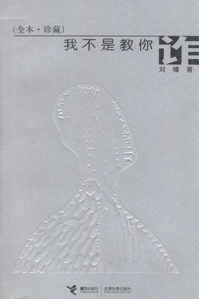
《我不是教你诈》
一本有趣的书。定位在针对社会现象所写的实用主义，通过世间百相的揭示，告诉你不吃亏的学问。如同一盘文化快餐，且不论营养价值多高，品后但觉爽心可口。不会绞尽脑汁，亦不会闹消化不良。会心处一笑，即可。“我不是教你诈，是让你认清这个世界！”刘墉笔下充斥了这一类哲理短句。
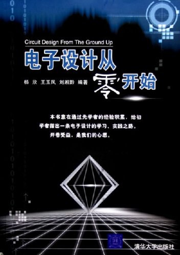
《电子设计从零开始》
《电子设计从零开始》全书分为三大部分，共17章。第1章至第8章深入浅出地介绍了模拟电路的相关知识；第9章至第11章是数字电路部分，介绍了一些基本概念和系统开发过程中经常使用的器件；从第12章到结束是以51单片机为例的单片机应用技术介绍，其中有大量的实例和完整的程序。 电子设计涉及的知识面广、难度大，初学者往往不知从何入手。《电子设计从零开始》结合了作者多年的学习与辅导经验，全面系统地介绍了进行电子设计与制作所需要的各种知识，包括模拟电路、数字电路和单片机应用基础，并结合Multisim仿真软件对大部分实例进行了演示。
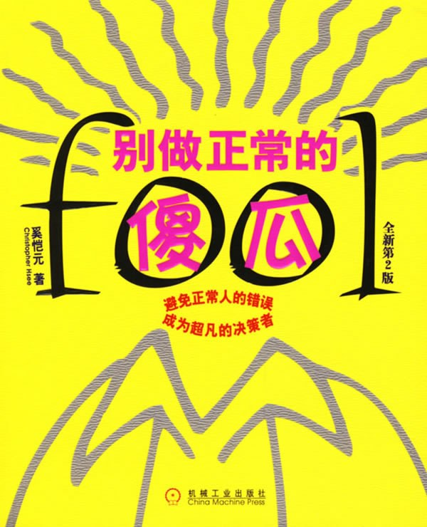
《别做正常的傻瓜》
你正常吗？也许是的。你傻吗？也许也是的。“正常”的决策者往往做着“傻瓜”的决策，而他们自己还蒙在鼓里。这些傻的错误在许多决策中会出现，包括购物、投资、用人、择偶等。 这本书基于获得诺贝尔奖的行为决策学，又基于作者10余年的管理教学经验，帮你揭示人们在工作和生活中熟视无睹的决策误区，并教你如何纠正。读完本书，希望你能“少几分正常，多几分理性”，在这充满竞争的世界里胜人一筹。
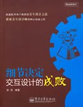
《细节决定交互设计的成败》
《细节决定交互设计的成败》是一本非常实用的有关软件界面的交互设计和可用性设计方面知识的书籍，通过采用一问一答的形式，你将会有针对性地学习到一些能够很快应用在自己软件开发工作中的细节知识和诀窍。例如，如何减轻用户的等待感，如何预防和减少用户的使用错误等。另外，你会发现阅读《细节决定交互设计的成败》时会非常轻松和愉悦；这是由于《细节决定交互设计的成败》写作上的两个特点：第一，采用较多日常生活中的例子来做比喻；第二，大量列举了一些实际软件的界面示例和屏幕截图。这些手法都使得读者能够更快、更好地提高交互设计的水平。 要想快速提高软件界面的可用性和用户使用体验，并不一定需要全面和系统地学习人机交互理论或认知心理学等的知识。实际上，通过掌握一些对于这些方面的常见问题的解决方法，以及注意细节的设计，你就能够快速而有效地实现以上目标。《细节决定交互设计的成败》适合于... (展开全部)

《送你一颗子弹》
这本书里记录的是作者2005—2009年左右(尤其是2006—2007年)生活里的点点滴滴。在这本书里，被“审视”的东西杂七杂八，有街上的疯老头，有同宿舍的室友，有爱情、电影和书，大到制度，小到老鼠。由于我写这些东西的时候，出发点并不是写一本书，所以不同文章往往风格迥异，长短不一，质量不均，随着社会形势、荷尔蒙周期以及我逃避生活的力度而起伏。

《公正》
哈佛大学殿堂级哲学课：用电车难题撕开道德直觉，带你在功利、自由与美德的激烈交锋中重建正义底线。

《〈华尔街日报〉是如何讲故事的》
《华尔街日报》资深头版特稿编辑倾囊相授的写作圣经：把枯燥冷硬的商业趋势，改造成引人入胜的人性故事。

《江城》
何伟笔下的九十年代三峡小城记忆：用平视、克制且温存的目光，记录巨变前夕普通中国人的坚韧生活。

《寻路中国》
一辆租来的切诺基驶入现代中国的心脏：从长城残垣、京郊农家到江南工厂，全景记录草莽年代的造富狂潮与阵痛。
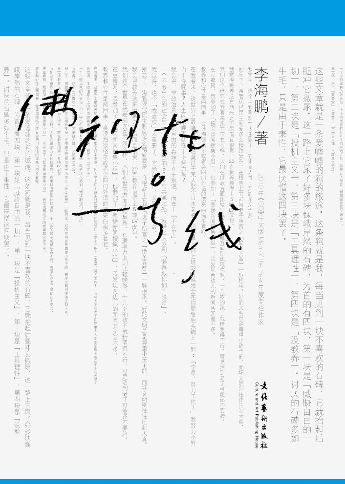
《佛祖在一号线》
千呼万唤的李海鹏首部专栏集，中国当下最好的专栏作家之一。 本书是著名新闻人和评论人李海鹏在《第一财经周刊》、《南方周末》和《智族GQ》上的专栏集结。涉及社会、经济、文化、生活的时评和杂文。语言睿智幽默、见解险直犀利，让民众听到一种最清醒有力的声音。 李海鹏的身份并不是作为《南方周末》的高级记者记，或者《第一财经周刊》的专栏名家，或者《GQ》的专题总监而被大家记住的，他被人尊敬和认识，是因为他近乎天真的对自由的执着，对伟大社会成形的关注及焦心。抽丝剥茧的分析，吹毛断发的文字，掷地成声的观点，恣肆放达的叙述，这些都注满了李海鹏的所有文章，其间到处安放着才情、思想、和对自由美好世界的向往，以至于除此之外，他几乎一无所有了。 图书品牌：磨铁——文治图书 请海鹏写专栏是《第一财经周刊》做的最好的决定之一。很多时候我们怯于表达，海鹏有勇气；很多时候我们的表达不够... (展开全部)
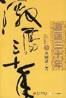
《激荡三十年（下）》
1993至2008年中国商业风云下卷：国企改制、网络破晓、资本狂欢与大国崛起背后的激荡大考。
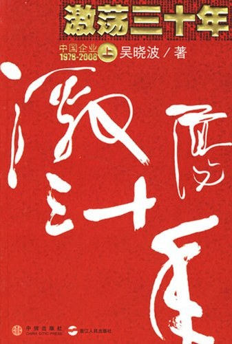
《激荡三十年（上）》
1978至1992年中国商业破冰史：从小岗村红手印到南巡讲话，草莽英雄在体制裂缝中杀出一条血路的激荡岁月。

《时间触发嵌入式系统设计模式》
嵌入式工程领域的殿堂级设计范式：彻底摒弃不可预测的事件触发与抢占乱局，用确定性时间触发架构铸就高可靠系统。

《我也有一个梦想》
林达近距离看美国系列重磅之作：在黑人奴隶制与民权运动的漫长历史回廊中，见证一个大国如何艰难兑现人人生而平等的立宪承诺。

《别闹了，费曼先生》
诺贝尔物理学奖得主的顽童自传：用永不熄灭的赤子好奇心拆解权威，在修收音机、撬保险箱和敲桑巴鼓中玩转世界。

《历史深处的忧虑》
林达近距离看美国系列开山鼻祖：以书信体深入浅出拆解辛普森案与第一修正案，带中国人看清自由背后的制度代价与深层忧虑。

《做最好的自己》
融合苹果、微软与Google管理精髓的青年成长手册：用“成功同心圆”模型指导大学生与职场新人做最好的自己。

《礼仪金说》
人大知名教授金正昆的现代商务与社交礼仪实战宝典：讲透体面分寸感背后的尊重心理与交往技术。

《读大学，究竟读什么》
撕开象牙塔迷茫的青年逆袭清醒剂：指导当代大学生摆脱混日子套路，建立真刀真枪的自学能力与职场竞争力。

《民主的细节》
政治学学者刘瑜的美国微观观察手记：通过琐碎社会事件剖析现代民主制度的运转齿轮、权力制衡与法治根基。
主理人四星精选
主理人豆瓣个人书架标记为 4 星的高价值书目精选，已逐本完成真实出版目录与深度导读核验。

《编写可读代码的艺术》
主理人四星力荐经典非虚构杰作，深度剖析《编写可读代码的艺术》核心精髓。

《Web界面设计》
主理人四星力荐经典非虚构杰作，深度剖析《Web界面设计》核心精髓。

《算法图解》
主理人四星力荐经典非虚构杰作，深度剖析《算法图解》核心精髓。

《码农翻身》
主理人四星力荐经典非虚构杰作，深度剖析《码农翻身》核心精髓。

《Web表单设计》
主理人四星力荐经典非虚构杰作，深度剖析《Web表单设计》核心精髓。
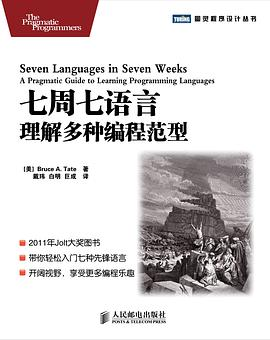
《七周七语言》
主理人四星力荐经典非虚构杰作，深度剖析《七周七语言》核心精髓。
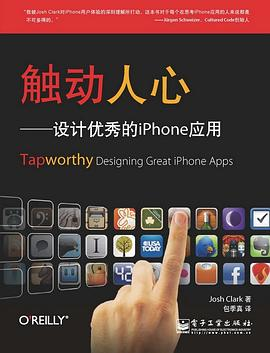
《触动人心》
主理人四星力荐经典非虚构杰作，深度剖析《触动人心》核心精髓。
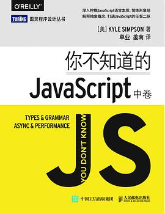
《你不知道的JavaScript (中卷)》
主理人四星力荐经典非虚构杰作，深度剖析《你不知道的JavaScript (中卷)》核心精髓。
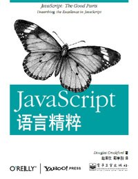
《JavaScript语言精粹》
主理人四星力荐经典非虚构杰作，深度剖析《JavaScript语言精粹》核心精髓。

《图解HTTP》
主理人四星力荐经典非虚构杰作，深度剖析《图解HTTP》核心精髓。

《深泽直人》
主理人四星力荐经典非虚构杰作，深度剖析《深泽直人》核心精髓。

《色彩设计的原理》
主理人四星力荐经典非虚构杰作，深度剖析《色彩设计的原理》核心精髓。

《锋利的jQuery》
主理人四星力荐经典非虚构杰作，深度剖析《锋利的jQuery》核心精髓。

《JavaScript DOM编程艺术》
主理人四星力荐经典非虚构杰作，深度剖析《JavaScript DOM编程艺术》核心精髓。
《结网》
主理人四星力荐经典非虚构杰作，深度剖析《结网》核心精髓。

《Excel图表之道》
主理人四星力荐经典非虚构杰作，深度剖析《Excel图表之道》核心精髓。

《简约至上》
主理人四星力荐经典非虚构杰作，深度剖析《简约至上》核心精髓。

《Word排版艺术》
主理人四星力荐经典非虚构杰作，深度剖析《Word排版艺术》核心精髓。
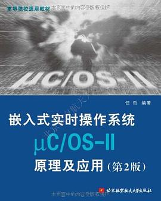
《嵌入式实时操作系统μC/OS-II原理及应用》
主理人四星力荐经典非虚构杰作，深度剖析《嵌入式实时操作系统μC/OS-II原理及应用》核心精髓。
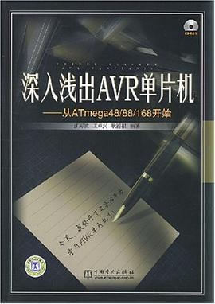
《深入浅出AVR单片机》
主理人四星力荐经典非虚构杰作，深度剖析《深入浅出AVR单片机》核心精髓。
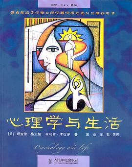
《心理学与生活》
主理人四星力荐经典非虚构杰作，深度剖析《心理学与生活》核心精髓。
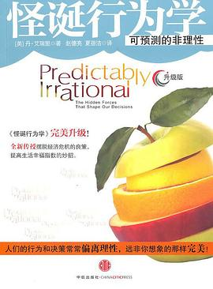
《怪诞行为学》
主理人四星力荐经典非虚构杰作，深度剖析《怪诞行为学》核心精髓。
《影响力》
主理人四星力荐经典非虚构杰作，深度剖析《影响力》核心精髓。
《改变心理学的40项研究》
主理人四星力荐经典非虚构杰作，深度剖析《改变心理学的40项研究》核心精髓。
《拖延心理学》
主理人四星力荐经典非虚构杰作，深度剖析《拖延心理学》核心精髓。

《学会提问》
批判性思维领域的经典圣经。书中系统提炼出评估论证逻辑的提问工具箱，教读者识别隐藏的价值观假设、思维谬误与虚假证据，摆脱被动接受信息的“海绵式思维”。

《如何阅读一本书》
享誉全球半个世纪的终身阅读圣经。书中建立起“基础阅读、检视阅读、分析阅读、主题阅读”四层递进阅读框架，教读者像侦探一样透视全书骨架，与人类最伟大的心智平等对话。

《蛤蟆先生去看心理医生》
风靡全球的心理咨询普及经典童话。作者借英国文学名著《柳林风声》的人物，生动展现抑郁严重的蛤蟆先生在苍鹭咨询师引导下，通过沟通分析学（TA）走出心理阴霾的治愈过程。

《掌控习惯》
风靡全球的微习惯养成实操指南。作者提出“原子习惯”复利法则与四大行为转变定律，教读者通过微调环境触发点、捆绑喜好、降低摩擦阻力与即时反馈，轻松重塑自动化行为系统。
《明智行动的艺术》
畅销书《思考，快与慢》的绝佳行动派搭档。德国顶尖思维大师罗尔夫·多贝里以幽默风趣的短篇随笔，精准剖析52个日常决策中普遍存在的隐蔽认知陷阱与行为误区。
《把时间当作朋友》
影响一代青年成长的心智开启启蒙书。作者直击“时间无法管理”的本质，主张通过开启心智、管理自己、克服即时满足与急躁心态，用长期的耐心做时间的朋友。

《八周正念之旅》
牛津大学正念中心权威开发的抑郁与焦虑自救经典教程。融合认知行为疗法（CBT）与正念禅修精髓，以详尽的八周渐进式音频与身心练习，教现代人退出内耗的“行动模式”，回归安宁的“存在模式”。

《寻找弗洛伊德》
国际精神分析学会（IPA）正统精神分析专家李武石教授撰写的通俗经典。以生动温情的案例与清晰脉络，带读者穿透潜意识的迷雾，理解本我自我超我的冲突、防御机制与内心深处未解的情结。

《异类》
颠覆传统个人奋斗神话的社会学经典力作。格拉德威尔以大量极具震撼力的数据与案例揭示：顶尖成功人士绝非天生孤勇英雄，其飞跃背后深藏着生逢其时的时代机遇、一万小时刻意练习与深厚文化遗产的滋养。
《智识分子》
同人于野（万维钢）代表作。以敏锐的理工科思维解析世界顶尖学术前沿，辨析“公知”与“智识分子”的本质差异，带读者摆脱常识偏见、犬儒主义与情绪绑架，掌握理性认识复杂世界的思想工具。

《软能力》
计算机科学家、文津图书奖得主吴军博士的终身成长心法。书中系统提炼出交往力、洞察力、分辨力、职场力与决策力五大核心“软能力”，教读者在专业硬技能之外构建决定人生长跑格局的综合素养。

《沟通的方法》
得到App CEO脱不花的实战沟通集大成之作。提出“倾听、开放性、目标感、建设性”四大底层基石，为倾听、破冰、赞美、批评、道歉、提案等18个高频工作生活场景提供即学即用的结构化沟通公式。

《小强升职记》
国内最具实操价值的GTD（时间管理）职场启蒙经典故事书。通过职场新人“小强”在老法师指点下的蜕变历程，将时间黑洞、四象限法则、衣柜整理法（收集/处理/组织/回顾/执行）融会贯通为轻松上手的无压工作系统。

《断舍离》
风靡全球的身心整理哲学经典。作者将瑜伽哲学转化为现代居家整理智慧，提出“断绝不需要的东西，舍弃多余的废物，脱离对物品的执念”，通过清理外在杂物唤醒内在自我，夺回生活的主权。
《怦然心动的人生整理魔法》
入选《时代周刊》全球最具影响力人物近藤麻理惠的颠覆性整理宝典。首创“心动感”（Spark Joy）取舍法则与直立式折叠收纳法，主张一口气按物品类别在短时间内完成彻底整理，实现永不复乱的人生重启。
《投资第1课》
有知有行创始人孟岩的诚意之作：把投资从“零和博弈的赌局”还原为“分享人类商业繁荣的资产配置系统”。
《目标》
高德拉特开创性TOC制约法管理小说：用工厂救亡的生动故事，揭示系统瓶颈如何决定整体有效产出。
《重来》
Basecamp创始人反商业教条的经典力作：教你拒绝假大空的计划与融资，用精简小团队做出赚钱的好产品。
《一本书读懂财报》
清华大学肖星教授的经典财务启蒙：用人话穿透资产负债表、利润表与现金流量表背后的商业真相。

《香帅金融学讲义》
原北大金融系博导香帅的通识全景力作：串联货币、银行、投行、资产定价与金融思维的宏大认知框架。

《贾宁财务讲义》
清华大学贾宁教授的现代财务战略指南：跳出机械做账思维，用表征、找钱、花钱与诊断赋能商业决策。

《大国大城》
上海交通大学陆铭教授的区域经济学力作：用无可辩驳的数据论证大城市集聚效应，倡导在集聚中走向区域均衡。

《江村经济》
中国社会学与人类学奠基性传世巨著：马林诺夫斯基盛赞的开山之作，以太湖开弦弓村解构中国乡土社会变迁密码。

《跨越边界的社区（修订版）》
牛津大学项飙教授成名代表作：用六年近距离深描，揭示北京“浙江村”非正式自发秩序如何打破户籍与体制高墙。

《把自己作为方法》
项飙与《单读》吴琦的深度对谈思想录：把个人困惑与时代创伤问题化，重新找回附近的温情与对话的勇气。

《打工女孩》
美籍华裔记者张彤禾的非虚构经典：长年卧底东莞工厂，记录流水线年轻女性从乡村向现代城市的惊人蜕变。

《中国在梁庄》
青年学者梁鸿轰动文坛的非虚构返乡调查：以豫南梁庄为解剖样本，泣血书写现代化转型中乡村的空心、溃败与创伤。

《长乐路》
美国国家公共电台驻华记者史明智的上海弄堂纪实：从三公里长乐路小人物命运，折射当代中国梦想与现实的碰撞。

《社会与政治运动讲义（第二版）》
芝加哥大学赵鼎新教授的社会学宗师级讲义：全面梳理集体行动与政治运动理论，构建国家-社会关系的分析范式。

《探路之役》
当代史权威学者萧冬连力作：以翔实档案复盘1978-1992中国从计划转轨市场的惊心动魄探路历程。

《政治学通识》
复旦大学包刚升教授的政治科学经典读本：以跨国比较视野与严密科学范式，穿透政体、国家能力与制度演进逻辑。
《智能时代》
硅谷投资人吴军博士的前瞻经典：从机械思维到大数据思维，揭示机器智能对商业、产业与未来社会结构的重塑。
《AI·未来》
创新工场李开复博士的AI地缘与人类命运思考：从角逐中美AI双雄争霸，到抗癌重生后重构人机共存与关爱蓝图。

《人类简史》
以色列历史学家赫拉利颠覆全球认知的现象级巨著：以宏大演化视角审视智人从一种普通动物到自封为神的全景史诗。

《从一到无穷大》
20世纪科普巅峰启蒙神作：物理大师伽莫夫用妙趣横生的画笔，带你畅游大数、相对论、微观原子与浩瀚宇宙。

《小家，越住越大》
前万科资深住宅建筑师逯薇的国民级收纳指南。书中以生动手绘图解拆解中国人真实居住痛点，首创“住商”概念，提供玄关、客厅、厨房、衣帽间极致扩容与动线优化的实用解法。
《营造的意趣》
空间设计师张建以手绘图解剖析东西方经典建筑与园林营造智慧的美学力作。以71个生动场景，带领读者跨越古今，从微末一砖一石领悟空间意境与人居哲思。
《建筑第一课 建筑学新生专业入门指南》
清华大学建筑学博士袁牧写给专业新生的清醒入门指南。不仅系统梳理建筑学核心知识树与学习路径，更直击心智模型与动手实操，被建筑学子誉为“绝世武功秘笈的目录”。
《东京八平米》
日籍华语作家吉井忍的口碑生活哲学之作。记录她在东京租住仅八平米、无独立卫浴房间的真实日常，把整个城市当成延伸客厅，生动诠释轻盈从容的极简生活艺术。
《美的历程》
当代著名哲学家李泽厚的经典美学通史。以宏阔的哲学视野与诗意激情的笔触，纵贯数千年中华艺术史，揭示远古图腾至明清文艺思潮背后华夏民族心灵与审美心理结构的演进历程。

《人间词话》
近代国学大师王国维融汇中西美学的划时代文艺批评典范。以精炼敏锐的语录体提出“境界说”，辨析有我与无我之境、隔与不隔之辨，总结古今成大事业者必经的三种境界。

《王氏之死》
当代著名汉学家史景迁的微观历史叙事杰作。以清初康熙年间山东郯城为舞台，巧妙交织地方官黄六鸿治县实录、地方志与蒲松龄《聊斋志异》，细腻重构底层农妇“王氏”私奔并惨遭杀害的时代悲剧。

《胡适口述自传》
新文化运动旗手胡适晚年在哥伦比亚大学口述的回忆录，由历史名家唐德刚倾力翻译与批注。胡适的温和自述与唐德刚犀利深邃的“传叙史学”注释交相辉映，构成近现代知识分子思想演变的绝唱。

《总统是靠不住的》
林达“近距离看美国”系列最具代表性的制度剖析名著。以水门事件尼克松引咎辞职等惊心动魄的历史大案为轴，生动透视三权分立、独立司法、新闻自由如何把最高权力关进制度铁笼。
《如彗星划过夜空》
林达“近距离看美国”系列第四部，全景复盘1787年费城制宪会议与美国立国宪政精神历程。从五十五位代表四个月的争吵与“伟大妥协”，到汉密尔顿现代财政奠基与五角大楼文件案新闻自由对决，展现宪政理性如何划破历史黑夜。

《自由在高处》
学者熊培云流传极广的公民自由与精神觉醒随笔集。以温和理性的笔调阐发“帕斯卡尔式”的精神高度，主张每个人在时代的局限中守住良知的“一厘米主权”，把一生当成自己的远大前程。

《重新发现社会》
知名学者熊培云探讨当代中国转型与现代公民社会生长的重磅力作。提出“从国家解放走向社会解放”，通过界定国家与社会边界、财产权与税权、互联网公共空间，开出渐进改良的温和启蒙药方。

《世上为什么要有图书馆》
陕西科技大学副教授杨素秋挂职西安碑林区文化局副局长期间的真实非虚构力作。记录她从零开始在一片地下商场废墟中力排阻力、打破书商潜规则、打造出一座有灵魂的区级公共图书馆的动人历程。

《日常的深处》
中国人民大学哲学院副教授王小伟的科技哲学与日常生活批判力作。从吃饱外卖、买房安家、穿衣通勤，到电视堕落、微信镣铐与断舍离，带领读者重返器物生活本身，反思被算法技术异化的现代处境。

《鱼翅与花椒》
英国著名美食作家扶霞·邓洛普风靡全球的中国美食文化纪实回忆录。记录一个剑桥才女在成都高等烹饪学校学厨、沉醉于川菜麻辣味型体系、穿越东西方饮食文化偏见与生态反思的传奇人生。

《我的阿勒泰》
当代新疆非虚构散文作家李娟的成名代表作。以澄澈纯净、毫无雕饰的天然文字，记录阿勒泰深山牧场与荒野小镇的游牧日常，展现哈萨克牧民的坚韧乐观与大自然的浩瀚深情。

《天生有罪》
南非著名脱口秀主持人“崔娃”（Trevor Noah）感动全球的非虚构自传。以笑中带泪的高超幽默，讲述在种族隔离制度严苛法律下，一名黑人母亲与瑞士白人父亲结合生下“非法婴儿”的惊险成长与母亲伟大的爱。

《我在北京送快递》
前快递员胡安焉打动数百万读者的非虚构劳动纪实。以极其冷静、诚实、克制的内省笔调，全景记录在物流转运中心通宵夜班分拣、在S通与J东北京送快递的底层肉身体验与内心秩序重建。

《我比世界晚熟》
胡安焉继《我在北京送快递》后的深度精神自传与心理剖析之作。回溯二十余年漫长漂泊中如何因性格羞怯、厌恶竞争而“晚熟”，以罕见的诚实直面内向者的精神内耗、文学救赎与自我重建。

《秋园》
八十岁素人奶奶杨本芬在逼仄厨房案板上写出的催泪生命史诗。以平静克制的白描语言，打捞母亲“秋园”在二十世纪中国动荡百年中历经战乱、饥荒、家破人亡却如野草般拼死护佑子女的苦难与尊严。
《粗糙》
资深效率专家陈海滢结合二十万学员实战经验打磨的抗拖延指南，直击完美主义心魔，以粗糙启动与快速迭代彻底重塑行动力。

《大道》
段永平首部亲自授权认可的思考实录，以极其朴素透彻的语言揭示‘买股票就是买公司’的投资大道与‘本分、平常心’的商业底层智慧。

《我用中文做了场梦》
意大利青年亚历以全中文独立书写在华六年的漫游记忆，用极其真挚清澈的笔触打捞底层群演与市井小人物的生命切片，重构关于语言、漂泊与身份认同的精神图景。

《意象的帝国》
当代著名诗人黄梵倾注数十年创作与高校工坊心血的诗歌创意写作指南，系统破除灵感玄学，以意象裂变与形式建筑学解密新诗构筑的精密技艺。

《见证历史》
美联社前摄影总监哈尔·比尔权威汇编七十余载普利策新闻摄影全本杰作，以二十万字第一手档案与震撼影像打捞二十世纪至当代的铁血真实与人性悲歌。

《智慧的疆界》
以甲子跨度的宏大视野与硬核工程洞见，全景复盘人工智能从符号推演、连接主义到具身智能的思潮交锋与认识论演进。

《匠心体验》
法国顶级UX专家以600个跨端实战案例，提炼出智能手机与平板界面设计的感官适应、极端效率与情感化匠心法则。
《天才职业者访谈录》
10位身处生死暗流与行业极境的小众职业者，用惊心动魄的肉身一线见闻，打捞被大众视线忽略的真实人间与人性真相。
《一个故事的99种讲法》
法国潜在文学与潜在漫画工场（OuBaPo）的殿堂级实验之作，将一个平庸的日常一分钟以99种变奏重构出无穷的叙事宇宙。
《潦草》
以凝胶般冷峻克制的百字白描，为东北衰退小城被时代甩下的无数底层凡人，立下一座座真实而尊严的潦草生命碑林。
《文学体验三十讲》
读小说是在喧嚣时代独自建构一个精神世界，苗师傅用三十个文学之夜把经典名作还原为关乎孤独、欲望与生死的真实生命体验。

《目光》
遭遇至暗浩劫却以纯粹大爱反哺人世，眼科名医陶勇用二十年临床沉思与生死洞察，诠释了真正不败的理想主义与心灵光芒。

《有所不为的反叛者》
以批判、怀疑与想象力穿透官方叙事迷障，北大历史学家罗新揭示历史写作的本质：拒绝为胜利者背书，做一名守住底线的有所不为者。

《再会，老北京》
把自己毫无保留地抛入大栅栏胡同泥土中实地沉浸，又抽身跳出做严谨的百年拆迁档案实证，麦尔以深情而客观的笔触为消逝的老北京立传。

《格局》
将硅谷顶级认知凝练为人生进阶系统，吴军博士从位置、方向、方法、步伐与节奏五个维度，指引普通人摆脱低水平勤奋、实现可叠加式进步。

《吃的真相4：需求与恐慌》
食品工程博士云无心直面消费主义恐慌与虚假健康焦虑的辟谣力作：揭示需求如何被营销包装捏造、恐惧如何被商业变现，用硬核食品科学常识重塑现代人的饮食理性。

《感悟设计》
资深嵌入式硬件研发主管王玮的工程哲学力作：跳出孤立技术细节与数学公式，以“模拟无处不在”“上工治未病”的中庸工程智慧，透视电子软硬件系统设计的底层逻辑与排障心法。

《疯狂经济学》
经济学家唐·汤普森撕开当代艺术市场神秘幕布的先锋之作：揭秘一条死鲨鱼如何卖出上亿天价，深刻剖析画廊、拍卖行、顶级藏家与投机资本合谋构建的“品牌化超级暴利机器”。

《见识》
硅谷著名投资人吴军博士的认知升级奠基之作：破除低水平盲目勤奋的“伪工作者”陷阱，以长远眼界、商业本质与全局格局指引终身进阶与幸福人生。
《哲学家们都干了些什么?》
林欣浩爆笑破圈的西方哲学极简通识神作：用机智犀利的吐槽与生动八卦剥开晦涩学术外衣，全景复盘两千年人类思想先驱为追寻世界终极真理而前赴后继的壮烈思想史诗。

《OPUS 作品》
今敏漫画生涯的至高元叙事杰作，以虚构角色抢夺画稿反叛创作者的超现实狂想，打通漫画、现实与终极造物主的重重维度，预演了《未麻的部屋》《红辣椒》的梦境与现实交叠法则。

《建筑师》
图像小说里程碑式神作，讲述纸上建筑师阿斯泰里奥斯·波利普在五十岁生日当夜遭遇雷击火灾后，流浪到偏远小镇修车重构生命次序的灵魂救赎史诗。

《六里庄遗事》
著名文案与相声研究者东东枪历时十余年磨砺之作，以仿拟笔记小说的体裁，虚构唐代长安城外六里庄各色市井小人物的平生碎语，在荒诞滑稽中写尽人世苍凉。

《突然，响起一阵敲门声》
以色列短篇小说鬼才埃特加·凯雷特最具代表性的超短篇杰作集，以举重若轻的黑色幽默与天马行空的荒诞设定，在枪口与炸弹阴影下为当代人讲诉治愈心灵的残酷童话。
《西方建築圖解詞典》
著名建筑学者与画家王其钧教授耗时数载手绘编撰的西方古典与近现代建筑百科词典，以千余幅精密解剖图透视柱式、穹顶与空间构造的演化密码。

《中國建築圖解詞典》
清华大学建筑学博士王其钧以千余幅手绘精密图解，系统破译中国传统木构营造的力学逻辑、形制礼制与美学语汇。

《刀背藏身》
导演学者徐皓峰以硬派实战笔触考据北方武林，揭示民国武人在枪炮时代与时代转折期恪守的规矩、体面与刀背藏拙之道。

《俗世奇人》
当代文豪冯骥才以洗练辛辣的白话笔触，描绘清末民初天津卫码头上十八位身怀绝技、脾性刚烈的市井草莽传奇。

《活着》
当代文学巅峰之作，以洗尽铅华的平静语调讲述老农福贵历经沧桑的一生，宣告生命超越苦难本身的纯粹与神圣尊严。

《慢慢来，反正也来不及》
知名编剧囧叔以反鸡汤的幽默笔触为市井边缘小人物立传，在荒诞与温情并存的反转故事中化解当代都市人的速成焦虑。

《小姨多鹤》
当代文坛大家严歌苓以极度细腻克制的笔触，书写二战遗孤日本少女竹内多鹤在东北家庭中隐秘作为‘生子机器’与‘小姨’的半生悲欢，在血缘与伦理夹缝中叩问人性的神圣韧性。
《芳华》
严歌苓取材军队文工团青春岁月的自传体杰作，以冷峻温存的忏悔视角撕开英雄神话与集体排挤，为被时代碾碎的善良平凡者立传。
《佛祖都说了些什么?》
哲学科普名家林欣浩以极具逻辑锋芒与通俗幽默的白话，系统解构汉传佛教两千年思想流变，用理性明灯照亮因果轮回、缘起性空与禅宗公案的底层骨架。

《公园常见花木识别与欣赏》
资深园林植物专家殷广鸿以开花物候为时间经纬，精选城市公园160种常见花木与800幅实拍细节图谱，融汇植物分类学特征与古典诗词园林美学。

《文明之光（第四册）》
硅谷投资人吴军博士人类文明全景史诗收官之卷，以八大历史切片全景复盘印刷术、启蒙运动、反托拉斯、宪政法治与现代交通如何共同铸就现代文明底座。

《大学之路（套装）》
计算机科学家、投资人吴军博士以陪同女儿考察欧美数十所名校的亲历视角，系统剖析英美现代顶尖大学的办学哲学、教授治校传统、通识教育真谛与长远人才培养之道。
《我与地坛》
当代文坛至深沉悲悯的精神地标，双腿瘫痪的史铁生在荒芜冷落的明代古园中静坐十五年，以带血的哲思看透生死困厄，为受难的母亲与苍生献上不朽的心灵史诗。
《把你的英语用起来！》
语言学习专家伍君仪与知名教育博主恶魔奶爸刘晓光联合打造的革命性二语习得实战指南，以‘透析法’与克拉申输入假说击穿死背单词语法低效神话。
《人情·世故》
华语乐坛第一词人林夕以如火热心与如灰冷眼，在八十余篇精悍散文中审视人心、人情、人烟、世故、世面、世风，在执迷与看破之间寻获精神自在。
《我爱问连岳5》
知名专栏作家连岳情感问答系列第五部集大成之作，以常识、理性与经济学思维冷峻剖析当代青年在恋爱、婚姻、婆媳与职业选择中的撕裂迷局，开出不灌鸡汤的解毒良方。
《关键词》
著名文化学者梁文道立足当代公共生活，以冷峻理性的公民视角解剖当代汉语语境中被滥用、扭曲与符号化的核心词汇，重申常识、正义与公共精神的价值。
《设计诗》
著名书籍设计师朱赢椿以独特的图文互文与版面排版实验，将汉字字形、留白韵律与日常诗意融为一体，打破文学与视觉艺术边界的先锋视觉诗集。
《我讲个故事，你可别当真啊》
豆瓣传奇故事讲述者囧叔以冷面幽默与市井奇谭笔法，记录当代都市边缘奇人异士的荒诞狂想与草根温情，在黑色幽默中托举平凡人的生活尊严。
《孩子你慢慢来》
著名作家龙应台以柔软深情的母爱视角，记录陪伴长子安德烈与次子飞飞童年成长的点滴生命体验，以温润文字探讨生命成长的从容节律与母职哲学。
《走神》
知名专栏作家连岳以独立清醒的随笔杂文，聚焦日常生活、中年心境与常识理性，倡导在被信息裹挟的焦虑时代保持精神的专注与自由“走神”的从容。

《烹饪工艺》
将千百年中式烹调经验解构为严谨的热力学传导与食品生物化学反应，建立起从微观物性重组到宏观风味呈现的系统化烹饪工程学。

《站在两个世界的边缘》
身负重疾而向死而生的“职业病人”，在病榻与轮椅的方寸之地以鼠标单指敲击出坚不可摧的精神城堡，给虚无时代以最悲悯从容的人性叩击。

《深夜食堂 01》
在新宿夜巷只于子夜开张的狭小酒肆里，以十四道家常料理烹调市井边缘小人物的悲欢离合，用极度克制的烟火温情化解现代都市人的无尽疏离。

《我们热爱什么样的生活》
以刺破群氓狂欢的冷峻手术刀与深沉悲悯，直击“人盲症”与历史虚无，为转型期中国呼唤守住常识底线与独立尊严的公民生活。

《时间回旋》
以地球被黑膜时间减速亿倍的宏伟末日设定，交织三位主角横跨数十年的科幻编年史，在宇宙热力学的绝望深渊中谱写人类理性与爱的人道史诗。

《平面国》
维多利亚时代神学家艾勃特借二维几何世界构筑的跨时代讽喻杰作，以‘正方形’漫游点国、线国、平面国与空间国的奇幻旅程，深刻反思人类认知的傲慢与制度规训。
《六神磊磊读金庸》
知名时评人六神磊磊以当代职场与人情人性的独特显微镜，对金庸武侠江湖进行解构式深读，在刀光剑影的江湖背后照见残酷现实与普通人的冷暖尊严。
《仙症》
新东北作家群领军人物郑执里程碑式短篇小说集，以艳粉街市井烟火为熔炉，书写下岗狂潮余波中小人物的疯癫、尊严与穷鬼的慈悲，同名作改编电影《刺猬》。

《如何不切实际地解决实际问题》
前NASA机器人工程师、xkcd漫画作者门罗运用硬核科学公式与脑洞火柴人漫画，以极致夸张又符合物理定律的荒诞‘馊主意’解决日常琐事，科学极客思维盛宴。

《呼吸》
当代全球最高水准哲理科幻大师特德·姜九篇神作合集，以无可挑剔的缜密逻辑与崇高人文情怀，在机械热寂、时间闭环与自由意志的尽头谱写宇宙级哲学诗篇。

《文明之光（第一册）》
计算机科学家吴军博通文理的通识巨著开篇，以大历史观与工科实证思维，梳理罗马法、景德镇瓷器、美第奇家族、古腾堡印刷术到启蒙运动的人类文明跃迁轨迹。
《文明之光 （第三册）》
吴军文明史系列第三卷，聚焦近代古典音乐、现代物理学革命、计算机信息时代、华尔街金融体系与硅谷创业神话，展现近现代科学与资本的磅礴交响。
《我读书少，你可别骗我》
‘文字鬼才’马伯庸早期脑洞大开的短篇故事集，将历史考据、科幻假想与荒诞幽默熔于一炉，以《末日焚书》《湘西航班》解构一本正经的文化傲慢。

《我知道你是怎么剩下的》
知名心理咨询师吴迪立足中国一线城市婚恋实战咨询，以一针见血的辛辣笔触解剖大龄单身青年的心理防御、认知偏差与代际绑架，破除童话恋爱幻觉。

《猛虎细嗅蔷薇》
知名文化学者韩松落电影随笔经典，以敏锐温润的西北文人笔调，穿透光影银幕剖析名伶宿命、荒野乡愁与人性幽微，在残酷现实中打捞温存诗意。

《佛教常识答问》
当代杰出佛学大师赵朴初先生耗费数载撰写的权威启蒙经典，以极其平实质朴的问答体例，系统厘清两千五百年佛教历史源流、核心义理、宗派演变与文化影响。
《为了报仇看电影》
韩松落开宗明义的成名影评经典，以极具文学质感的冷艳语言，穿透经典电影的光影幻象，解剖现代都市人的爱欲、恐惧与生存创痛，视电影为对抗生活平庸之恶的利刃。
《历史是个什么玩意儿1》
现象级名嘴历史教师袁腾飞通俗讲史开山作，以京味幽默、评书快板般的生动语言，通透贯通先秦夏商周至隋唐盛世两千余年制度演变与兴亡兴替。

《职场动物进化手册》
当代中国职场政治事理学开山鼻祖雾满拦江神作，以动物寓言与三千年权谋智慧为刃，剖析‘黄牛’被淘汰、‘大肥猫’通吃的办公室潜规则与生存进化逻辑。

《青春》
当代青年公共知识分子韩寒博客杂文黄金时代的巅峰文集，以嬉笑怒骂的犀利短刀，解剖转型期社会荒诞、富士康跳楼困局与普通年轻人的尊严迷茫。

《玻璃屋顶》
中国早期互联网文化思想启蒙专栏名篇集，在千禧年.com泡沫破灭之际，以清醒犀利的知识分子视角，预言赛博空间在资本收编、技术藩篱与算法围栏下的命运蜕变。

《大地孤独闪光》
当代非虚构特稿宗师李海鹏代表作，以无可替代的文学洞察力与大地悲悯，记录才力之死、玉树救援、奥运边缘人等宏大时代背景下无名肉身的孤独与尊严。

《我爱问连岳Ⅲ》
连岳麻辣情感专栏第三卷，以明晰的产权意识、契约法理与生物进化逻辑，一针见血斩断中国式情感中的道德绑架、琼瑶式受虐与原生家庭吸血乱象。

《我爱问连岳Ⅳ》
连岳问答系列第四辑，直面职场危机、中年焦虑、大龄晚婚恐惧与阶层分化，以更具穿透力的经济学生存常识，为在时代浪潮中迷茫的都市青年导航。
《吃的真相2》
食品工程博士、科学松鼠会核心云无心硬核科普经典续篇，以严密毒理学与营养学实证，破除阿胶美容、蜂胶抗癌、反式脂肪恐慌与有机食材神话，舌尖上的理性启蒙。
《俗话说》
文案鬼才东东枪幽默解构中国俗语与民间谚语的妙趣之作，以相声曲艺的灵动机锋，拆穿数百条‘俗话说’自相矛盾背后的市井生存智慧与中国人情世故。
《蔡康永的說話之道》
华语殿堂级主持人蔡康永最具影响力的情商说话美学经典，40篇趣味灵动短文，倡导说话不是逞口舌之快，而是把别人放在心上，用温柔与同理心构筑舒适人际关系。

《开动脑筋》
日本心理学与创造力大师多湖辉《头脑体操》经典启蒙，以数百道颠覆直觉常理的智力谜题，拆解思维盲区与定式枷锁，全面激活发散思考与空间想象潜能。

《改变人心的技巧》
日本实用心理学泰斗多湖辉经典之作，系统剖析人类心理防卫机制与行为动力学，传授在不激发逆反敌意的前提下巧妙影响他人决策与行为的温和说服法则。

《当彩色的声音尝起来是甜的》
当代中国青年科普写作开山奠基力作，科学松鼠会数十位一线科学家与青年学者联手，以充满诗意的文学笔触剥开坚硬的科学坚果，让知识在唇齿间迸发美味芬芳。

《与未来同行》
前微软、Google全球副总裁李开复写给中国大学生的里程碑式成长启蒙，融合世界顶级高科技企业研发管理实战与七封致学生信，指引青年在国际化创新浪潮中实现自我超越。

《我的梦想在燃烧》
当代青年知识分子思想批评与书斋求索的激情之作，承袭五四与西南联大精神血脉，对世俗沉沦、大学精神失落与体制奴性发起赤诚而炽热的精神抗争。

《文化苦旅》
当代中国‘文化大散文’开山扛鼎之作，学者余秋雨孤身万里跋涉大西北与江南名胜，以悲悯深沉的笔触在山水风物中叩问千年中华文明兴衰与文人命运。

《以诈止诈》
华人处世心理学大师刘墉经典力作，以数十个拍案叫绝的真实商业商战与社会迷局案例为镜，传授‘害人之心不可有，防人之心不可无’的现代博弈智慧。

《野火集》
华语公共知识分子思想启蒙旷世里程碑，龙应台以《中国人，你为什么不生气》等二十篇如烈火般灼热的重磅檄文，烧醒沉默盲从的看客群体，掀起华人社会公民意识觉醒狂潮。
《蒋公的面子》
当代青年剧作家温方伊现象级话剧神作，以1943年蒋介石兼任中央大学校长宴请三位中文系教授的传闻为轴，在去与不去的文人机锋中解剖知识分子风骨与体制依附的永恒困境。

《漫画电影史》
英国天才插画家爱德华·罗斯图像电影学经典，以近四百幅致敬经典电影的分镜漫画为引，从身体、时间、声音、技术、力量与地点六大维度深度解码第七艺术的百年魔力。

《历史是个什么玩意儿4》
袁腾飞通俗历史畅销书系第四卷，以麻辣生动的京味脱口秀风格纵览世界近代史风云，将英法美资产阶级革命、工业革命与两次世界大战演变为活色生香的文明演进大戏。

《跨一步就成功》
华人著名励志大师刘墉经典成长散文，以极其生动的寓言故事与亲历生活观察，引导年轻人在面对畏难情绪、选择迷茫与逆境挫折时，鼓足勇气跨出打破平庸的决定性一步。

《超越自己·创造自己·肯定自己》
影响全球数千万华人家长与青年的经典成长三部曲合卷，刘墉以给儿子刘轩的亲切家书为体，融合中西教育精髓，铺就从少年自律、青年独立到步入社会肯定自我的通达阶梯。

《靠自己去成功》
刘墉写给爱女刘倚帆的成长私房话经典，以温润幽默的父爱笔触，围绕独立自律、青春期自尊、社交安全与女性自我实现，传授现代女孩‘不依附、不怯懦、靠自己去成功’的立身哲学。

《求职，从大一开始》
青年职业导师覃彪喜继《读大学，究竟读什么》后的就业破局经典，颠覆‘大四才找工作’的传统认知，传授从踏入校门第一天起打造核心竞争力、实现毕业即巅峰的战略实战规划图。
《匠人手记》
中国嵌入式系统与单片机硬件设计领域现象级工匠秘籍，资深工程师‘匠人’张俊以数十个真实电路板炸裂与死机排错案例，倾囊传授工业级数模混合设计与抗干扰绝学。
《海象日记》
当代青年独居生活与心灵疗愈图文日记，以海象般温厚迟钝的视角，记录三十岁在大都市角落抵抗虚无、料理一日三餐、与猫相依的治愈温存日常。
《赶时间的人》
外卖骑手诗人王计兵轰动全网的诗歌代表作，在电动车后座颠簸的十五万公里风霜中，以最质朴滚烫的文字，写尽算法倒计时下底层劳动者的骨肉尊严与大爱悲悯。

《读库1106》
非虚构纪实长文精选集，以《八千湘女上天山》《寻找林昭》等厚重篇章，立足第一手口述与解密档案，打捞被遮蔽的历史细节与大时代下具体个体的惊心命运。

《读库2104》
汇聚近代知识分子心路、民国警政秘档与当代底层迁徙的深度非虚构合辑，在文献考辨与田野实录中见证历史风云下人的坚守与离散。

《读库2202》
兼具历史宏观视野与当代微观体温的非虚构读本，从北洋军政人物风云到珠三角车间工人、县城老照相馆四十年底片，记录中国社会的复杂质感。

《纳闷集》
当代青年都市心理的诗性画卷，以克制细腻的分镜与长对白，解构现代人在亲密关系、职场周旋与返乡逃离中的隐秘困惑与生活顿悟。

《五百万汉字》
当代实力派作家阿乙的创作手记与生命实录，坦陈从基层刑警到职业作家的漫长蜕变，在重病磨难与文学信仰中对汉字纯度的刀锋式坚守。
《漫画统计学》
日本经典科学漫画教程，将繁杂抽象的数理统计原理转化为生动的日常拉面店与生活情境，图解数据分布、回归分析与假设检验的核心逻辑。
《漫画流体力学》
将经典物理中最令人望而生畏的流体运动转化为趣味漫画，从水流、风力到飞机机翼升力，透彻解析伯努利方程、纳维-斯托克斯方程与湍流本质。
《门萨的娼妓》
伍迪·艾伦极具颠覆性的经典幽默讽刺短篇集，以硬汉侦探调查高智商陪聊、教授穿越进《包法利夫人》等绝妙荒诞构想，无情解构知识分子的精神伪善与智力虚荣。
《黑夜飞行》
前《三联生活周刊》副总编苗炜的私人阅读与都市漫游随笔集，在深夜书房与纸页星空之间穿梭，以清冷克制的文字抚慰现代人的精神焦灼。
《流浪集》
当代华人慢生活与闲晃漫游哲学的开山之作，舒国治以清雅如水又极具古意的白话，写尽流浪的艺术、赖床的快乐与一无所有的精神丰足。
《沧浪之水》
当代中国体制官场与知识分子心灵史的现实主义巨著，深刻展现池大为从清高傲骨的研究生到历经屈辱、妥协异化并最终执掌权力的惊心历程。
《棋王.樹王.孩子王》
当代中国寻根文学巅峰三部曲，以精练古雅如白描的罕见汉语言，在知青苦难年代中刻画道家气象、人与自然的对抗及启蒙之痛。
《沉默的大多数》
当代中国思想启蒙杂文不可逾越的丰碑，王小波以罕见的理智、清醒与幽默，捍卫独立思考的尊严，打破平庸恶俗的话语霸权。

《可爱的洪水猛兽》
韩寒个人博客黄金时期的锋利杂文选集，以职业拉力车手的利落与青年公共知识分子的机智幽默，解构世相荒诞，守护常识与良知。

《通稿2003》
中国当代批判应试教育制度的划时代之作，韩寒以亲身退学经历为锋刃，全面剖析考卷、教条、师道与唯学历论的弊端，为青年个性解放鸣锣开道。

《零下一度》
韩寒高中退学前后的早期散文随笔精选，以清冷机敏的文字记录江南小镇风物、寄宿校园日常与少年叛逆心事，见证一代青年偶像的最初锋芒。

《象棋的故事》
斯蒂芬·茨威格自杀前完成的绝笔中篇小说，以远洋客轮上的棋局对决为舞台，借纳粹白色恐怖下因被囚偷看棋谱导致人格分裂的B博士，控诉法西斯对人类心灵的残酷摧残。
《小径分岔的花园》
世界先锋文学与后现代小说的万神殿之作，博尔赫斯以迷宫、时间、镜像与虚构百科全书，颠覆了人类对时间流向与现实维度的线性认知。
《你一生的故事》
当代世界硬科幻公认的皇冠之作，好莱坞科幻巨制《降临》原著小说集，特德·姜以费马极值原理、非线性格义文字与宿命哲学，重构时空认知的终极震撼。
《三体Ⅲ：死神永生》
中国科幻史诗终极巅峰之作，刘慈欣以执剑人交接、威慑崩溃、云天明童话与二向箔降维打击，将人类命运推进至百亿年尺度下的宇宙田园与死神终章。
《置身事内：中国政府与经济发展》
当代中国政治经济学最具通识价值的神作，从地方政府的财税分权、土地财政、城投融资到债务风险，全景透视政府深度参与市场运行的底层密码与深远转型。
《大型网站技术架构：核心原理与案例分析》
阿里巴巴资深架构师李智慧的经典之作，以高可用、高性能、可伸缩、可扩展与安全性五大核心要素为骨架，系统解构千万级PV大型互联网系统的架构演进与模式精髓。
《写给大家看的设计书》
全球畅销二十余年的视觉排版启蒙圣经，以对比、重复、对齐、亲密性四大基本原则（C.R.A.P），赋予普通人瞬间看懂并创造专业设计的美学魔力。
《围城》
中国现代长篇小说幽默风骨与讽刺美学的最高峰，借方鸿渐在留洋镀金、三闾大学教书与家庭围城中的兜转挣扎，道尽人类生存永恒的渴望与厌倦困境。
《骆驼祥子》
中国现代现实主义文学不朽的高峰，老舍以沉郁苍凉的京味语言，记录旧北平人力车夫祥子三起三落、终在黑暗吃人社会中彻底毁灭的心灵长卷。

《流浪地球》
刘慈欣硬科幻最具古典悲壮史诗感的里程碑杰作，记录人类给地球装上万台重聚变发动机、跨越两千五百年逃离太阳氦闪末日的伟大流浪史诗。

《挪威的森林》
当代世界文学最具影响力的青春伤逝与生死救赎长篇，借渡边彻在直子与绿子之间的情感摆渡，谱写一代年轻人在孤独、成长与死亡深渊前的凄美哀歌。

《血色浪漫》
当代中国最具浪漫主义反叛精神的青春史诗，借钟跃民从北京大院顽主、陕北插队知青、特种侦察连长到可可西里志愿者的传奇半生，诠释“永远在路上”的自由宿命。

《生活在别处》
米兰·昆德拉剖析青年抒情诗狂热与极权政治合谋的锋利寓言，借青年诗人雅罗米尔从纯真美学梦幻走向警察告密者的短暂一生，解构崇高面具下的平庸与残忍。
《中央公园西路》
伍迪·艾伦百老汇经典室内讽刺戏剧，将纽约曼哈顿上层中产阶级的婚姻出轨、心理分析虚伪与道德危机，浓缩在一间豪华公寓客厅的连环爆笑撕扯中。
《中国古代简史》
北京大学历史系经典断代通识通史，张帆教授以清晰深厚的学术功底，穿透三千年政治制度演进、门阀更替、唐宋变革与大一统帝国运行的底层脉络。
《中国古典园林史》
清华大学建筑学院半个世纪教学奠基巨著，周维权教授以浩瀚史料与建筑测绘图纸，全景勾勒中国三千年古典园林从皇家苑囿到文人写意山水的辉煌演进。
《始于极限：女性主义往复书简》
当代现象级女性主义思想对谈之作，学者上野千鹤子与作家铃木凉美就恋爱、母女、工作、容貌与独立等主题展开十二次回合的刀锋对决与灵魂坦白。
《我不知道该说什么，关于死亡还是爱情》
诺贝尔文学奖得主阿列克谢耶维奇传世非虚构巨著，历经数年深入切尔诺贝利灾区，用无数普通人颤抖的真实口述拼贴出人类史上最大核灾难背后的残酷与神圣。
《太阳的阴影：深入非洲的旅程》
当代全球非虚构报道巅峰宗师卡普希钦斯基的毕生力作，四十余年深入非洲大地的战乱、饥荒、政变与烈日，用沉潜如诗的笔触打破西方中心论，还原真实非洲的苍凉与尊严。

《安定此心：我当精神科医生的12000天》
同济大学精神医学博导李清伟主任医师三十三年临床手记，深入封闭病房与门诊诊室，记录精神分裂、双相、抑郁与失智症背后的生命尊严与现代人心理困局。

《跑外卖：一个女骑手的世界》
当代中国数字零工经济第一视角非虚构民族志，女性学者亲自穿上骑手黄色工服送外卖，用身体丈量算法控制下的街头劳动、性别困境与底层尊严。

《我的高职学生》
知名非虚构学者黄灯聚焦中国高等教育被遗忘的半壁江山，以多年班主任的温情注视，记录数万普通高职青年的求学困境、出路突围与平凡人生。

《东京本屋》
日籍华语作家吉井忍历时六年深度走访东京十家独具灵魂的独立书店，以温润平实的图文记录书店主人的坚守与手艺，展现实体书店作为城市心灵绿洲的永恒温度。
《毫无意义：伍迪·艾伦自传》
四座奥斯卡得主、传奇导演伍迪·艾伦八十五岁亲自撰写的唯一自传，以标志性的自嘲机智与坦诚笔锋，回顾从布鲁克林弄堂少年到世界电影宗师的狂诞半生。
《贫穷的质感：王梆的英国观察》
旅英非虚构作家王梆历时十二年的沉浸式田野调查，深入英国衰退工业小镇的廉租房、食物银行与社区菜园，真实勾勒现代福利国家退潮后的底层生存肌理与平民体面。
《为城市而设计：城市设计的十二条认知及其实践》
中国当代城市规划与建设治理领域的权威指导专著，系统确立城市作为有机生命体的科学认知，提出以人为本、微改造、天际线控制与文脉传承的实践范式。
《梁漱溟 王实味 储安平：现代中国知识分子群》
当代知识分子精神史名家谢泳代表作，以梁漱溟、王实味、储安平三位典型人物为标本，深刻反思现代中国知识分子在政权、主义与良知夹缝中的命运悲剧。

《爱，需要学习：如何拥有高质量的亲密关系》
知名心理学学者陈海贤系统拆解亲密关系心理学的温暖力作，从差异冲突、防御机制、原生家庭边界到信任重建，提供高质量亲密关系的实操工具箱。

《战斗吧，蝗虫博士！：昆虫学家的撒哈拉历险》
日本天才昆虫学家前野乌鲁德浩太郎在撒哈拉沙漠防蝗前线的爆笑又壮烈的科研探险自传，以荒诞不羁的热血与科学严谨，揭开遮天蔽日沙漠蝗虫灾难的生物学密码。

《生活世界中的功利主义：哲学原理与历史实践》
中国人民大学伦理学权威龚群教授力作，系统梳理从边沁、密尔到现代的功利主义哲学谱系，深入探讨其在公共政策、生命伦理与现代生活世界的重大实践边界。

《以日为鉴：衰退时代生存指南》
日本“泡沫经济学”宗师野口悠纪雄反思“失去的三十年”权威力作，以详实一手数据解密资产负债表衰退、少子老龄化冲击与普通人应对长期停滞的生存铁律。

《跨境支付及金融服务——通道、流程与系统》
跨境金融科技与企业出海支付系统架构殿堂级实战指南，全面剖析全球清算通道网络、外汇管制合规、清结算流程与高可用支付系统架构落地。

《分类的艺术：动物学家如何认识世界》
诺贝尔生理学或医学奖得主儒勒·霍夫曼的科学认知哲学经典，以生物分类学演进为线索，揭示人类如何从外在形态描述走向基因与演化树的深层秩序建立。
《我是寨子里长大的女孩》
大山深处苗寨女孩金花的真实逆风成长史，在重男轻女的贫困偏见中用书本撕开命运裂缝，走出大山、闯荡都市并在文字与镜头中完成文化寻根的动人传奇。
《网络是怎样连接的》
计算机网络通识不可逾越的神作，以在浏览器中输入网址敲下回车的一瞬间为探针，全程追踪网络数据包穿透操作系统、交换机、路由器直至服务器的全景探索之旅。
《献给阿尔吉侬的花束》
世界软科幻与心理学长篇小说的最高杰作，智障青年查理·高登接受脑部手术后智力呈指数级飙升为世界级天才，却最终眼睁睁看着心智退回深渊的残酷催泪史诗。

《悉达多》
诺贝尔文学奖得主赫尔曼·黑塞东方心灵哲学最高代表作，借古印度婆罗门青年悉达多离开佛陀教义、投身世俗红尘并最终在河水声中顿悟圆满的求道史诗。

《繁花》
第九届茅盾文学奖金奖神作，金宇澄以质朴洗练的沪语白话与单双章节时空交错，绘就六十年代与九十年代两代上海市井儿女的欲望、离散与落寞沧桑。

《小镇喧嚣：一个乡镇政治运作的演绎与阐释》
当代中国政治社会学与基层田野调查的殿堂级巨著，吴毅教授耗时两年卧底中部某乡镇，以微观全息白描全景展现乡镇政权在拆迁、招商与博弈中的喧嚣运作。

《以利为利：财政关系与地方政府行为》
北京大学社会学系周飞舟教授奠基力作，以中央与地方财政体制演变为轴，深入解密分税制、农村税费改革与土地财政如何深刻塑造中国地方政府的行为逻辑。

《开放中的变迁：再论中国社会超稳定结构》
当代思想史经典《兴盛与危机》姊妹篇巨著，金观涛刘青峰以宏大系统论视野，解密晚清至民国大变局中传统超稳定结构在外部冲击下的崩溃、瓦解与现代重组。

《镜与世俗神话：影片精读18例》
北京大学戴锦华教授电影批评理论与视听语言精读圣经，以手术刀般锋利的马克思主义与女性主义眼光，解剖十八部世界影史名作背后的意识形态与文化神话。

《五号屠场》
世界黑色幽默反战科幻无可争议的至高丰碑，冯内古特借“时间脱臼”的美军战俘比利·皮尔格里姆，在德累斯顿大轰炸火海与外星四维宇宙间穿梭，冷峻道出人世无常：“事情就是这样”。

《诊疗椅上的谎言》
当代存在主义心理治疗大师欧文·亚隆极具悬疑反转色彩的心理小说神作，在诊疗室的谎言交锋与性诱惑圈套中，探索真诚、越界与医患救赎的心理深渊。

《读库2303》
高品质非虚构长篇精选合辑，以南洋华人移民血泪、国图古籍修复秘辛与大山乡村书简，在扎实的田野与档案发掘中见证民间记忆的沉静力量。

《自学大全》
风靡东亚的终身自主学习百科全书，日本知名知识博主“读书猴”倾囊相授55个经认知心理学验证的自学心法与读书技巧，打破放弃恶性循环。

《如何是好》
当代现实主义大师阎真继《沧浪之水》后直面当代青年生存困局的长篇新作，记录寒门女研究生许晶在保研黑幕、萝卜招聘、求职内卷与情感背叛中的残酷挣扎。
《明亮的夜晚》
当代韩国现象级女性百年家族长卷，作家崔恩荣以如水温柔却坚不可摧的笔调，打捞四代女性在战乱、贫困、家暴与离异中彼此托举照亮的生命明亮夜晚。
《多谈谈问题：单读33》
当代青年知识分子深度人文杂志书代表作，吴琦主编携手两岸学者作家，拒绝虚无躺平与宏大口号，直面当下真实困境，在行动与深思中重铸公共对话精神。

《AI未来进行式》
计算机科学家李开复与世界科幻星云奖得主陈楸帆跨界联袂巨作，以十个扣人心弦的未来科幻故事与硬核科技剖析，描绘人工智能将在二十年后深刻重塑人类社会的二十张蓝图。
《人间修炼指南》
知名硬核金融风控专家半佛仙人的破局之作，以辛辣幽默的黑色幽默笔触，全方位拆解职场博弈、商业收割、消费陷阱与人际防身法则，助人在真实人间清醒立足。

《深入浅出PMP》
风靡全球的Head First经典视觉化项目管理宝典，将晦涩严苛的PMBOK五大过程组与十大知识领域，转化为爆笑漫画、生动拼图与实战场景，让项目管理心法入脑入心。

《IT项目经理成长手记》
中国一线大型企业IT项目总监数十年血泪实战心法，真实还原程序员转型项目经理在需求蔓延、进度延期、团队内讧与甲方博弈中的全景破局之道。

《网易一千零一夜：互联网产品项目管理实战》
网易杭州研究院项目管理团队十年深耕互联网敏捷研发的经典结晶，系统解密网易云音乐、网易严选与网易有道等亿级国民级产品的敏捷迭代、看板工程与效能进阶实战。

《10种洞察：探索理所当然之外的世界》
中国传媒大学设计思维学者王可越的认知破局指南，拆解从微末细节到宏观冲突的十种观察维度，帮助我们击穿常识壁垒，重获对真实世界的感知敏锐度。
《断头螺丝》
何荣扎根南方制造业车间十余载淬炼而成的现实主义小说集，聚焦五金模具与机床轰鸣间的流水线工人，以刀刻般的文字记录断指、锈蚀、尊严与异乡漂泊的生命实录。
《变得厉害》
作家刘天昭的敏锐内省随笔集，以手术刀般精准的诚实笔触，解构现代都市青年的自恋、虚荣、写作焦虑与对“厉害”的执念，呈现一个女性在日常琐屑中重获内在秩序与自足的心路历程。

《空耳集》
资深出版人、当代语词收藏家黄集伟的民间语文力作，捕捉当代汉语在网络狂欢、民间误听与世俗修辞中的奇妙变异，通过一个个鲜活生动的新造词与空耳梗，记录中国转型期的社会心理年轮。
《钻石广场》
加泰罗尼亚文学巅峰之作，马尔克斯毕生推崇的平民史诗。小说以巴塞罗那平凡女子科罗梅塔的内心独白，展现她在西班牙内战、法西斯独裁与鸽群窒息包围中，如何以野草般的惊人韧性熬过浩劫、重获新生。
《寻获与失落》
雨果奖与星云奖双料大师厄休拉·勒古恩中篇巨著典藏集，以人类学家的深邃视野和诗人的哲思笔触，漫游瀚星宇宙与文明荒原，在异星文明的生灭中探寻人类关于性别、权力、自由与归宿的终极命题。
《信号》
美国南方平民小说大师蒂姆·高特罗的短篇经典，以路易斯安那河湾沼泽为背景，书写老机修师、无线电员、伐木工人与船长在工业衰退期对技术操守、旧派道德与微茫希望的坚毅守护。
《同名同姓受害者协会》
江户川乱步奖得主下村敦史的社会派推理爆款。当一名残害女童的凶手被捕且全名“大山正纪”被曝光后，全国所有同名同姓的普通人生活全被网络人肉与暴力私刑摧毁。他们聚在一起成立自救协会，却卷入了一场步步惊心的身份罗生门与连环反转。
《助人技术（第5版）》
国际心理咨询泰斗克拉拉·希尔传世经典教材。系统奠定探索（Exploration）、领悟（Insight）、行动（Action）三阶段助人模型，以详尽话术实录与微技能操练，搭建起从新手咨询师到专业助人者的科学阶梯。
《实用程序育儿法》
欧美畅销二十载、被誉为“婴儿耳语者”的科学育儿圣经。特蕾西·霍格打破盲目哭闹与熬夜喂养的育儿噩梦，首创E.A.S.Y.作息规律法与4S安抚程序，教会父母听懂婴儿啼哭密语，建立尊重、平稳且充满自由的新生儿养育秩序。
主理人心愿精选
从主理人豆瓣想读（Wishlist）书单中筛选的 220 本高质量非虚构杰作，已逐本完成真实出版目录与深度导读核验。

《中国古代简史》
北京大学历史系主任张帆教授代表作，以精炼清晰的线索统摄三千年中国古代政治制度、社会变动与王朝兴衰脉络。

《中国古典园林史》
清华大学周维权教授毕生力作，中国风景园林学界公认最权威经典通史，全景再现三千年造园思想与空间艺术演进。
《好的英语 : 反套路英语写作》
兰登书屋终身审校总监本杰明·德雷尔执笔，以幽默犀利的行业内幕打破教条，传授真正清晰优雅的现代英文写作法则。
《助人技术（第5版）》
国际心理咨询泰斗希尔教授经典，系统阐释‘探索—领悟—行动’三阶段模型，助人者必读的基础实操圣经。
《悲喜同源 : 陈其钢自述》
享誉国际的当代音乐大师、北京奥运会音乐总监陈其钢自传，坦荡记录跨文化艺术探索、生命大悲大喜与躬耕沉思。

《安定此心》
北京安定医院资深精神科主任医师姜涛30余年临床实录，深度剖析抑郁、双相与精神创伤，为现代人点亮心灵自愈之光。

《基层中国的运行逻辑》
中国人民大学经济学教授聂辉华力作，运用制度经济学工具刀锋般剖析条块结合、基层首长权力清单、公务员激励与地方债务的真实运转法则。

《当代中国政府与政治 (第二版)》
中国当代政治学泰斗联袂编著的权威高校经典教材，全景透视党政体制、国家权力机构与央地关系的运转机制。

《为权利而斗争》
世界法学泰斗耶林旷世名作，以雷霆万钧的语言宣告：法的目标是和平，而达到和平的手段是永不停歇的斗争！
《失落的卫星 : 深入中亚大陆的旅程》
当代非虚构旅行文学标杆之作，刘子超历时九年数次深入中亚腹地，用冷静深邃的文字勾勒欧亚大陆核心的迷茫与苍凉。
《发现的乐趣 : 费曼演讲、访谈集》
诺贝尔物理学奖得主理查德·费曼最真挚经典的演讲访谈精选，展现对世界永不磨灭的好奇心与绝不自欺的科学态度。
《中国古典园林分析》
中国科学院院士、建筑泰斗彭一刚经典巨作，以数百幅精美手绘钢笔画解析古典园林空间序列、视线组织与造景密码。
《东京本屋》
日籍华语作家吉井忍历时六年走访记录，以温润平实的笔触深度探访东京十家个性独立书店，寻觅都市心灵的避难所。

《故事法则》
中国社会科学院民俗学专家施爱东力作，运用叙事学与民俗学解剖刀，彻底揭开古今中外经典故事流传不衰的结构密码。

《君幸食 : 一场贯穿古今的中餐盛宴》
英国著名美食作家扶霞·邓洛普集大成之作，以三十年深入中国后厨的深情与博雅，全景绘制中国饮食文明的世界级画卷。

《我看见的世界 : 李飞飞自传》
世界人工智能领军科学家李飞飞震撼自传，回顾从新泽西洗衣店打工少女到主导ImageNet点燃深度学习革命的传奇学术人生。
《中年之路 : 人格的第二次成型》
荣格派心理学殿堂级大师霍利斯里程碑之作，揭开‘中年危机’的深层神经症本质，指引灵魂完成自性化与人格二次蜕变。

《猫鱼》
国际影星、导演陈冲真诚自传回忆录，以文学名家般的洗练与诚实，打捞平江路家族记忆、好莱坞浮沉与斑驳岁月微光。

《生活在低处》
继畅销名作《我在北京送快递》后胡安焉深度内省之作，以清醒克制的诚实，探讨普通人在时代低处安顿心灵与尊严的可能。

《过渡劳动 : 平台经济下的外卖骑手》
中国社会科学院孙萍副研究员历时七年深入外卖田野的学术力作，深刻剖析算法霸权、时间折叠与骑手群体的生存图景。

《隐谷路 : 一个精神分裂症家族的绝望与希望》
奥普拉读书俱乐部年度选书、美剧般震撼的非虚构医学史杰作，记录一个美国家庭12个孩子中6个患精神分裂症的苦难与人类基因密码的破译。

《我不知道该说什么，关于死亡还是爱情》
诺贝尔文学奖得主阿列克谢耶维奇巅峰代表作，以数百名切尔诺贝利亲历者的真实口述，谱写人类核灾难面前最痛彻心扉的爱情与受难史诗。

《身体由我 : 关于了不起的女性身体的一切》
德国知名妇产科女医生希拉·德利兹风靡全球的科普力作，打破千年羞耻禁忌，以科学与幽默重构女性对身体的掌控与爱。

《透过地理看历史》
历史地理通俗读物标杆，李不白以三维地图视角解析山川形胜、关隘险要与水系格局如何终极决定中国三千年王朝兴衰。

《我在上海开出租》
非虚构作家黑桃亲身兼职开出租车近千天的魔都夜行录，在方向盘与后视镜后冷眼观察繁华巨兽背后的世相百态与人间温凉。

《脏活 : 必要工作的道德伤害》
当代调查报道杰作，深入监狱狱警、屠宰场工人、无人机操作员与采矿底层，揭开现代社会将不可或缺的肮脏残酷劳作外包遮蔽的道德共谋。

《出界！艺术直岛》
直岛艺术奇迹幕后操盘手、地中美术馆首任馆长秋元雄史亲笔记录，讲述一座重金属污染荒岛如何蜕变为全球当代艺术圣地的传奇地方创生史诗。

《饥饿的盛世 : 乾隆时代的得与失》
历史学者张宏杰警世力作，撕开‘康乾盛世’虚妄光环，深度解剖乾隆朝集权顶峰背后的制度败血症与近代落后挨打的宿命之因。

《你干吗在乎别人怎么想？ : 充满好奇心的费曼》
理查德·费曼最深情真挚的自传续篇，记录与初恋阿琳至死不渝的凄美爱情，以及独立思考、绝不盲从世俗眼光的自由灵魂之声。

《南京大屠杀 : 第二次世界大战中被遗忘的大浩劫》
华裔女作家张纯如以生命为代价写就的英文非虚构里程碑，彻底打破西方世界半个世纪的沉默，让三十万冤魂的历史昭告全球。
《失败者的春秋》
知名历史作家刘勃代表作，以辛辣幽默的笔触撕开传统儒家美化滤镜，从‘失败者’与平民视角还原真实而残酷的春秋大变局。
《中国书法通识》
北京大学美育名师方建勋通俗力作，以线条、结体与气韵三重视角，带普通读者无门槛读懂中国书法笔墨背后的生命呼吸与东方心性。
《个人形成论 : 我的心理治疗观》
人本主义心理学一代宗师罗杰斯奠基名著，创立‘以人为中心疗法’，以无条件的积极关注与共情，指引迷茫灵魂成为真正的自己。
《城市发展史 : 起源、演变和前景》
城市规划与文明史殿堂级丰碑之作，刘易斯·芒福德跨越五千年人类文明，深刻反思技术崇拜下大都市的兴衰与生态重生之路。

《美国大城市的死与生（纪念版）》
现代城市规划领域最伟大的颠覆性经典，简·雅各布斯以一介女性公民之身单挑规划巨头，捍卫街道活力、人行道芭蕾与城市多样性。

《中国古建筑二十讲》
清华大学古建筑泰斗楼庆西教授大家小书，二十堂生动通识课带读者看懂中国木构建筑的营造法则、斗栱密码与空间诗意。

《向心城市 : 迈向未来的活力、宜居与和谐》
知名经济学家陆铭继《大国大城》后重磅新作，运用空间政治经济学实证数据，彻底击碎限制大城市发展的陈旧迷思，指明中国向心集聚的未来之路。
《漫长的余生 : 一个北魏宫女和她的时代》
北京大学历史系教授罗新代表作，借由洛阳出土的一方九十六字残破墓志，以如椽巨笔复活一个卑微宫女经历四朝杀戮的壮烈生命史诗。
《八次危机 : 中国的真实经验 1949-2009》
三农问题泰斗温铁军教授扛鼎之作，以扎实实证打破意识形态滤镜，全景解构新中国六十年八次周期性经济危机与乡村软着陆机制。
《东晋门阀政治》
中国中古史学泰斗田余庆先生毕生登峰造极之作，以考据之严密、眼光之深邃，彻底解密东晋百年‘士族与皇权共治’的特殊政治形态。
《平等悖论》
复旦大学哲学副教授谢晶的政治哲学力作，深入反思现代启蒙运动以来作为最高伦理信条的“平等”观念，剖析形式平等、机会平等与实质平等之间的深层张力与制度悖论。

《雪崩》
赛博朋克科幻封神之作，“元宇宙（Metaverse）”与“虚拟替身（Avatar）”概念的开山祖师。斯蒂芬森以狂飙突进的想象力，将苏美尔远古语言病毒、计算机黑客、披萨快递与跨国巨型企业统治的赛博未来熔于一炉。

《可能的世界》
非虚构作家杨潇的欧洲思想行走手记。作者跨越柏林、维也纳、布拉格与巴黎，在历史遗迹、档案馆与普通街巷间打捞二十世纪知识分子在极权、流亡与战火中的精神抉择，探寻冷酷时代里人性的“可能的世界”。

《二胎记》
当代作家毛利的家庭非虚构幽默随笔。以极其接地气、辛辣幽默的笔调记录二胎降临后都市双职工家庭的鸡飞狗跳，真实展现全职爸爸、幼升小焦虑、产后身心震荡与现代婚姻契约的重塑。

《关于地球的运动》
手冢治虫文化奖大奖得主鱼丰的现象级思想史诗巨作。以十五世纪中世纪欧洲为舞台，描绘一群无名学者、决斗者与异端在宗教裁判所的火刑架与严酷拷打面前，为了守护“地动说”的宇宙理性与真理火种，以血肉之躯代代接力的崇高悲歌。

《沉默时，请大声朗读情书》
青年作家、脱口秀编剧梁彦增的自选随笔集。以粗粝但深情的东北叙事质感，打捞铁西区工业遗痕、深夜录像厅记忆、漂泊青年在都市暗夜中的虚无与笨拙爱意，展现沉默平民的柔情与抗争。

《问道江南西》
广州在地文化研究者阿痴的城市微观地理手记。聚焦广州海珠区江南西三十年市井变迁，从工业村落、第一代文青小店实验田到网红打卡街区，以人类学显微镜记录老广街坊的市井烟火与城市更新的人情底色。
《二战信息图：数据化全景透视第二次世界大战》
法国顶尖军事史学家与数据可视化设计团队耗时四年磨砺的巨作。以现代信息图解（Infographics）全景解构二战，用数百幅极具视觉震撼力的数据图表，透视同盟国与轴心国在工业产能、兵力消耗、后勤补给与伤亡代价上的深层真相。
《你要的是幸福，还是对错》
资深心理咨询专家金韵蓉三十八载美满婚姻与数千个案沉淀的情感圣经。直击亲密关系中“争辩对错”的毁灭性死穴，教会伴侣在生活琐屑中放下防备、读懂情绪冰山，建立兼具独立自尊与深层连接的温暖同盟。
《悉德·菲尔德经典剧作教程》
好莱坞编剧泰斗悉德·菲尔德毕生心血力作，全球电影学院公认的编剧圣经。首创经典的“三幕式范式”（Paradigm），以严密如同建筑工图的叙事结构论，奠定了现代主流影视工业剧本创作的行业标准。

《不发表 就出局》
香港中文大学李连江教授倾囊相授的社会科学论文写作与学术生存秘籍。直击青年学者在“非升即走”考核重压下的选题焦虑、改稿瓶颈与发表困局，以极具工匠精神的实操方法论，指引学子在学术锦标赛中守住学术尊严。

《时间足够你爱》
世界科幻大师海因莱因晚年登峰造极的生命哲思史诗。讲述长生两千余岁的拉撒路·朗游历人类星际文明数千年的传奇，以犀利通透的格言与深情的回溯，探寻生命的终极意义——爱是唯一能够填满永恒时光的奇迹。

《流俗地》
当代马华文学里程碑巨作。以马来西亚怡保近打河谷的“楼上楼”组屋为轴心，围绕盲女银霞、细辉与拉玛三位伙伴四十年的成长沉浮，细密编织出一幅热带雨季中海外华人社会的风土图卷与市井生存史诗。
《两周自制脚本语言》
东京大学千叶滋教授亲授的编译原理极简实战神作。打破传统“龙书”深奥理论藩篱，以14天渐进式迭代路线，手把手带领读者从词法分析、抽象语法树到虚拟机执行，从零打造出支持闭包与面向对象的高性能脚本语言Stone。
《与社会学同游：人文主义的视角》
享誉半个世纪的社会学入门传世经典。著名社会学家彼得·伯格以优雅通透、富有哲思的人文主义笔触，揭示社会学作为一门“看穿表象”的激情科学，帮助读者打破理所当然的常识幻觉，从提线木偶蜕变为觉醒的自由行动者。
《星星是冰冷的玩具》
俄罗斯硬核科幻大师卢基扬年科的太空歌剧代表作。人类在银河系冷酷文明联盟中沦为仅仅具有肉身超空间跳跃耐受力的“运载骡马二等种族”，领航员彼得深入外星文明漩涡，在文明自决与尊严之间做出惊心动魄的宇宙抉择。
《张医生与王医生》
资深媒体人伊险峰与杨樱历时数年完成的沈阳社会学口述史。以两位生于七十年代工人家庭、通过高考成为三甲医院知名专家的医生为样本，全景透视东北重工业转型、工人村变迁与四十年中国社会阶层流动。
《此生未完成》
复旦大学海归女学者于娟在癌症晚期写就的生命顿悟日记。以毫无矫饰的赤诚与幽默笔触，记录直面死亡深渊时对透支健康、学术内卷与追逐虚名的深刻反思，为所有疲于奔命的现代人敲响震聋发聩的心灵警钟。
《能断金刚：超凡的经营智慧》
普林斯顿高材生、藏传佛学博士麦克尔·罗奇格西的跨界商业经典。将东方《金刚经》的空性智慧与因果种子法则，融合于纽约钻石贸易公司的创办实战，解构财富、商业成功与心智平静的底层同构法则。

《菜市场里的老虎》
青年小说家李唐的魔幻现实主义短篇力作。在城市菜市场的肉摊深处、筒子楼旧管道与城际列车的呼啸声中，失踪的人、会说话的老虎与荒诞梦境彼此咬合，以轻盈而奇异的笔触描摹都市青年的孤独隐秘与失重生存。
《不抓住什么就会飞走的海豹君》
现象级治愈漫画家菊池祐纪暖心代表作。讲述一只体重过轻、只要不抓牢东西就会被微风吹向天空的小海豹，在路灯、长椅与朋友温暖手掌的牵引下，在失重世界中找寻自身锚点的温情物语。

《李诞脱口秀工作手册》
中国脱口秀领军人李诞毫无保留倾囊相授的职业实战手记。打破文艺创作者沉溺于“等灵感、搞情绪”的文人习气，从每天写五条段子、科学面对冷场到改稿工业化，树立起职业内容创作者对抗拖延与内耗的工匠准则。

《工作、消费主义和新穷人》
当代西方思想大师齐格蒙特·鲍曼剖析晚期资本主义的核心经典。揭示社会如何从以“生产者”为核心的劳动伦理社会，演变为以“消费者”为核心的欲望机器，失去购买力的底层民众如何沦为被系统性遗弃的“新穷人”与废弃人口。

《图解建筑设计入门》
日本建筑学泰斗原口秀昭手绘图解教学扛鼎之作。以数百幅精美直观的透视图与剖面图，深入浅出讲解空间尺度感、动线设计、采光视线与立面虚实，将大师级建筑设计心法拆解为极具实操性的空间认知阶梯。
《图解建筑结构入门》
原口秀昭风靡东亚三十载的结构力学启蒙宝典。告别令人望而生畏的高等数学微分方程，以生动的拟人化受力漫画与夸张变形图解，将弯矩、剪力、轴力与抗震构架讲解得一清二楚，让每个人都能轻松读懂建筑骨骼的承重秘密。
《认识建筑》
现象学建筑大师尤哈尼·帕拉斯玛与建筑理论家罗伯特·麦卡特合著的世界级建筑通识经典。打破“视觉至上”的扁平认知偏见，引领读者调动触觉、听觉、重力与身体运动等多重感官，全方位体悟建筑空间的诗意居住本真。
《克莱因壶》
早于《黑客帝国》《盗梦空间》十年的虚拟现实推理神作。1989年问世即封神的科幻悬疑里程碑。青年作家受雇测试完全浸入式VR设备“伊普西隆计划”，在虚实难辨的双重世界中彻底跌入克莱因瓶无始无终的恐怖死循环。
《张明楷刑法学讲义》
清华大学法学院教授、中国当代刑法学宗师张明楷献给全社会的法治通识力作。打破对法条的僵死教条背诵，以数百个真实离奇、充满张力的经典判例，深入阐释实质解释论与法益保护原则，展现刑法作为“善良人的大宪章”的理性正义与人道底色。

《索拉里斯星》
世界哲学科幻天花板，塔可夫斯基影史神作《飞向太空》原著。人类面对覆盖全星、拥有难以理解智慧的液态胶质大洋，外星生命以宇航员潜意识深处最痛悔的记忆物质化出无法摆脱的“访客”，展开一场对人类知性傲慢的终极审判。

《刘嘉概率论通识讲义》
知名认知科学家、得到名师刘嘉打造的概率论决策心法。告别死记硬背枯燥公式，从抛硬币、赌徒谬误到贝叶斯推理与大数定律，系统搭建起在随机、混沌与不确定世界中对抗本能偏差、提升终身决策胜率的科学认知操作系统。

《深度工作》
麻省理工学院博士、乔治城大学计算机教授卡尔·纽波特的生产力革命圣经。直击数字时代注意力碎片化危机，提出在无干扰状态下深度聚焦、榨取心智极致潜能的科学法则，助你在日益浮躁的信息洪流中构筑不可替代的专业壁垒。
《我们为什么离正义越来越远》
当代思想学者熊逸横跨政治哲学与思想史的思辨巨著。以古希腊至当代的经典正义论争为线索，深入解剖道德直觉、功利主义、契约论与自由意志之间的永恒撕裂，揭开人类在追求理想正义旅途中不可调和的逻辑困境。

《春秋大义：中国传统语境下的皇权与学术》
当代思想学者熊逸解剖两千年儒法国家政治合法性密码的巅峰之作。以《春秋》公羊学“微言大义”的阐释史为解剖刀，彻底扒开汉唐至明清两千年儒生如何将学术包装为皇权辩护的意识形态工具，呈现中国古代权力运作的真实底牌。

《下沉年代》
美国国家图书奖非虚构巨著。著名记者乔治·帕克以1978至2012年三十余载的宏大长镜，交织记录铁锈带工人、华盛顿游说客、硅谷亿万科技富豪与北卡烟草农民的命运浮沉，以全景白描呈现超级大国内部精英背叛、阶级撕裂与美国梦碎的深沉挽歌。

《星之继承者》
世界硬核科幻与科学推理的至高天花板。2027年人类在月球背面发现一具身穿太空服的五万年前人类干尸“查理”，多国科学家展开一场跨越天文学、地质学、核物理与演化生物学的终极学术大破案，解开智人起源与太阳系历史的惊天真相。
《尘土》
当代东北作家贾行家震惊文坛的非虚构自选集。以刀刻般苍凉洗练的笔墨，书写哈尔滨与东北工业小城三代平民在极寒冻土上的生死悲欢，记录下岗老工人、街头浪子、老迈亲人如尘土般卑微却倔强的生命实录。

《人在故乡为异客》
英美幽默游记宗师比尔·布莱森在英国定居二十年后重返美国故土的文化观察手记。开着旧雪佛兰横穿三十八个州，以“局外人兼原住民”的双重透镜，辛辣调侃全美快餐文化、超级大卖场与公路文明，写尽对母国深情而荒诞的文化解剖。

《全民蠢萌的美国》
比尔·布莱森最令人捧腹的日常幽默专栏合集。以新英格兰小镇定居者的第一视角，调侃美国家庭垃圾分类、铲雪机除草机之争、过度诉讼、感恩节火鸡大屠杀与黑五血拼踩踏，以温情鬼脸揭开美式现代生活的笨拙可爱。

《全民自黑的英国》
比尔·布莱森被全英票选为“最懂大不列颠”的登峰造极之作（原名《小不列颠札记》）。布莱森移居美国前夕，乘绿皮火车与双腿徒步环游不列颠全岛，用最纯正的英式冷幽默描摹多雨天气、排队礼仪、下午茶执念与英国人骨子里的自黑绅士哲学。
《欢迎来到猴子馆》
黑色幽默文学泰斗冯内古特自选短篇小说巅峰全集。收录雨果奖传世名篇《哈里森·伯吉朗》等25篇杰作。以荒诞绝伦的科幻寓言、未来反乌托邦与残酷冷笑话，无情解剖平庸极权、人口控制、技术异化与冷战疯狂，在废墟上放声大笑。
《扫地出门》
普利策非虚构大奖、麦克阿瑟天才奖得主马修·德斯蒙德卧底密尔沃基贫民窟数年写就的社会学调查经典。以八个绝境家庭与房东的纠缠为主线，揭示“驱逐”并非贫困的结果而是制造贫困的制度死穴，解剖美国贫民租房市场的血腥暴利真相。

《哈瓦那特派员》
世界文学巨匠格雷厄姆·格林最具讽刺意味的黑色间谍讽刺神作。古巴革命前夕，落魄的英国吸尘器推销员沃摩尔德被军情六处（MI6）逼为驻古巴王牌间谍。为了赚取巨额活动经费供养虚荣女儿，他用吸尘器精密零件草图谎称为绝密导弹基地，引发全球情报界的大血拼。

《权力结构、政治激励和经济增长》
当代政治经济学学者章奇与刘明兴基于浙江数十年经济奇迹的开创性专著。突破传统“温州模式”单一文化或市场假说，从地方政治权力结构与官员政治激励的博弈视角，系统解开中国地方政府如何从“掠夺之手”转变为“宽容之手”的制度密码。

《拼了老命，你也做不出伟大的作品》
国际殿堂级设计事务所Edenspiekermann创意总监保罗·伍兹轰动创意界的清醒反思力作。以辛辣手绘漫画与实战方法论，向广告、设计与互联网大厂“毒性通宵加班文化”宣战，提供一套让创意团队既能产出传世经典又能准时下班的健康工作法。

《2000年以来的西方》
华东师范大学刘擎教授二十年西方公共思想年度述评精选集。以百科全书式的开阔视野与深厚学养，系统复盘新世纪前二十年西方世界在9·11、金融海啸、民粹主义狂潮、技术奇点与全球撕裂等历史拐点上的深层思想交锋，绘制出当代世界思想地缘变迁的高清图谱。

《鱼米之乡》
英国著名美食作家、中华美食文化西方首席传道士扶霞·邓洛普深入江南水乡的雅致风味手记。跨越扬州、绍兴、杭州、苏州与上海，细细打捞文人饮食美学、时令节气与糟醉刀工，以跨文化深情重现中国江南烹饪哲学的无上魅力。

《国家建设与政府行为》
当代组织社会学大师周雪光教授领衔的制度分析力作。聚焦中国国家政权建设与地方基层政府行为，以极具穿透力的组织学视角深入剖析“自上而下的压力型体制”、“基层共谋行为”、“项目制运作”与“运动式治理”的微观制度机制。

《给大壮的信》
知名媒体人、作家苗炜给幼子大壮写就的深情成长思想随笔。告别一切传统家长的道德规训与世俗鸡汤，以极其平等、温柔通透的成年人视角，与孩子推心置腹畅聊星空、金钱、爱欲、书籍与衰老，留下一份真挚豁达的现代人世界生存指南。
《中国古代文化常识》
语言学泰斗王力先生领衔编撰、历经四版打磨的国学文史终极常识指南。十四大门类全景扫描中国古代天文历法、宗法礼俗、官制车马、什物饮食与衣饰兵制，配以数百幅考古出土文物高精图谱，是读懂一切文言文与传统经典的必备神作。

《邓小平时代》
哈佛大学费正清东亚研究中心前主任傅高义历时十载写就的世纪传记巨著。以极其开阔客观的历史长镜，全景记录改革开放总设计师邓小平波澜壮阔的一生，重点解密真理标准大讨论、恢复高考、特区创办、中英谈判与1992南方谈话等扭转中国命运的惊天抉择。

《忧郁的热带》
结构人类学宗师列维-斯特劳斯的传世自传与田野哲思巅峰。被誉为二十世纪最伟大的散文之一。记录作者深入巴西热带雨林原始部落的科考漫游，以诗意洗练的笔墨解剖土著亲属对称、面部彩绘与神话思维，对西方文明的自大傲慢发出深沉的忧郁叹息。

《在中国大地上》
世界游记文学教父保罗·索鲁1986至1987年漫游中国铁路线的传世纪实。耗时近一年，搭乘四十余趟绿皮慢车纵贯大江南北，以犀利毒舌却充满同理心的目光，捕捉改革开放初期充满生机、困顿、好奇与躁动的真实中国世相长卷。
《妇产科男医生告诉你》
知乎大V、三甲医院资深妇产科男医生田吉顺的硬核女性健康通识力作。打破医疗伪科学、谣言与性别羞耻，用幽默、严谨与温暖的临床循证医学逻辑，全面扫盲月经生理、避孕实操、孕产安全与妇科体检，为所有女性与家庭提供科学医学护航。
《文学：八个关键词》
茅盾文学奖得主张炜在大学开设的文学创作与鉴赏通识名课讲义。提炼出文学精神的八大终极支柱——童心、泥土、清洁、悲悯、尊严、野性、理性与力量，以极其真纯滚烫的赤子之心，探寻文学在浮躁时代安顿人类灵魂的无上神性。
《计算机系统要素》
享誉全球的MIT与希伯来大学经典计算机全栈教材（Nand2Tetris）。带领读者从最底层的Nand（与非门）芯片出发，亲手设计搭建ALU、CPU、内存RAM、汇编器、虚拟机、编译器乃至完整的俄罗斯方块操作系统，打通软硬件全流程任督二脉。
《复杂生命的起源》
从跨膜质子梯度与生物能学奇迹出发，颠覆性解答单细胞向真核复杂生物演化飞跃的终极谜题。
《小行星掉在下午》
当代华语文学极具奇想魔力的短篇寓言集，用微凉精确的笔触描摹都市边缘人独特的精神避难所。
《仿制药的真相》
长达十年的跨国深度调查，刺破全球仿制药产业在降本狂潮下的造假黑幕与致命监管漏洞。
《羊呆住了》
当代中文先锋荒诞短篇与随笔集，以冷峻极简的文风和脑洞大开的物理撞击重构生活日常与宇宙秩序。
《走出唯一真理观》
当代中国最具原创性的哲学宗师文集，直面价值多元时代的困境，在明理与对话中探寻个体的安身立命之本。
《舆论》
传播学与政治哲学奠基巨著，揭示公众脑中图像与外部真实的鸿沟，剖析现代民主的认知局限与信息操纵机制。
《何为良好生活》
当代中文哲学界最具穿透力的伦理学沉思录，摆脱空洞教条，在行动与具体生活中寻找个体的安身立命之所。
《新闻理论十讲》
当代中国新闻传播学界最具反思意识与专业品格的经典理论教程，厘清真实性、客观性与公共监督的底线准则。

《规训与惩罚》
当代思想史上最具震撼力的权力考古学巨著，揭示刑罚从残酷肉体折磨转向温和心灵驯服的权力微观物理学。

《末日巨塔》
荣获普利策奖的非虚构调查巅峰之作，横跨半个世纪，以史诗级细节全景复盘基地组织崛起与9·11灾难的宿命之路。

《血疫》
非虚构灾难医学史诗巅峰，冷峻还原埃博拉与马尔堡丝状病毒从热带雨林洞穴逼近现代都市的恐怖历程。

《九人》
非虚构法律写作标杆之作，深入联邦最高法院大理石圣殿深处，展现九位大法官如何在政治博弈与宪法信仰间重塑美国命运。
《东方学》
后殖民主义批判开山奠基巨制，刺破西方学术、文学与权力合谋将‘东方’客体化与妖魔化的话语霸权网罗。
《消费社会》
当代西方批判理论划时代名著，颠覆传统物质消费观念，揭示符号价值、身份编码与商品物神对人类灵魂的终极围剿。
《人性中的善良天使》
当代跨学科认知科学与人类文明史里程碑巨著，用海量扎实硬核数据实证证明：人类历史上的暴力正在显著衰退。
《政治秩序的起源》
当代政治哲学比较历史学鸿篇巨制，重构人类从灵长类部落迈向现代国家建构、法治与负责制政府的演化拼图。

《国家的视角》
当代政治人类学巅峰经典，深度拆解极端现代主义工程如何通过傲慢的‘国家清晰化’摧毁复杂的民间生态。

《组织社会学十讲》
当代组织社会学殿堂级讲义，将新制度主义理论前沿熔铸于中国国家治理与基层科层运转的实证机理。

《第三种黑猩猩》
普利策奖得主戴蒙德‘人类大历史三部曲’奠基之作，以演化生物学巨镜审视人类作为第三种灵长类的辉煌与自毁本能。
《大问题：简明哲学导论》
风靡全球数十年的哲学启蒙圣经，摆脱晦涩学术黑话，以直击心灵的终极命题唤醒每一个个体的独立思辨潜能。
《手把手教你读财报》
价值投资实战派奠基指南，透彻树立‘财报是用来排除企业’的冷峻风控思维，手把手拆解财报粉饰迷雾。
《设计几何学》
视觉设计领域的比例美学解码宝典，用清晰透视硫酸纸图层，揭开古典艺术、现代建筑与经典工业品背后的几何秩序密码。
《人本界面》
苹果Macintosh项目发起人、人机交互宗师开山立说之作，从人类认知心理学底层物理定律重塑人机界面设计根基。

《交互设计沉思录》
交互设计界最具思想深度的人文主义沉思录，超越功能与线框图，探讨设计的同理心、行为塑形与社会伦理责任。

《从零开始学架构》
本土互联网高并发系统架构实战心法大成，立足复杂度分析，提炼高可用、高性能与可扩展设计的通用方法论。

《病者生存》
演化医学跨学科科普经典，颠覆性揭示糖尿病、血色沉着病等致命遗传疾病如何曾是帮助我们祖先绝境求生的救命铠甲。

《中国艺术与文化》
海外汉学与艺术史界公认的集大成通史杰作，摆脱纯形式主义赏析，将五千年中华物质文明置于真实政治信仰语境中透视。

《党员、党权与党争》
中国近代政治史实证研究里程碑名著，以冷峻档案解剖国民党‘弱势独裁’的组织细胞与体制性溃败死穴。

《鸟瞰古文明》
世界级考古建筑大师以毕生功力绘就的地中海古文明视觉史诗，用130幅宏大水彩鸟瞰复原图重现古典盛景。

《世界现代设计史》
当代中国现代设计教育奠基通史巨著，全景梳理从工业革命‘工艺美术运动’到包豪斯与后现代主义的百年设计演进史诗。
《函数式编程思维》
软件工程思维升级经典，带你跳出传统命令式代码泥潭，从纯函数、不可变性与高阶抽象中领悟优雅健壮的编程范式。
《手把手教你玩脱口秀》
风靡全球数十年的单口喜剧实战圣经，将幽默从神秘灵感降解为可拆解、可练习、可量产的精密心智力学机制。
《沟通的艺术》
风行全美四十余年的人际沟通心理学权威经典，全方位解析倾听、自我认知、情绪管理与冲突化解的行动指南。
《经济学通识》
原汁原味阿尔钦与芝加哥学派真实世界经济学讲义，用犀利直觉与冷峻逻辑戳破泛滥的情感道德伪善迷雾。
《拍电影》
好莱坞与全球顶尖电影学院数十年奉为圭臬的导演圣经，从案头剧本、视听调度到现场实战构筑完整电影工程学。
《耳语者》
斯大林时代苏联私人生活的史诗级口述史巨著，揭示极权高压如何撕裂家庭、逼仄人心并制造数代人沉默耳语的心理创伤。
《社会心理学》
风靡全球大学讲堂的社会心理学宗师级教材，揭开群体情境、从众心理、偏见与人际吸引力背后的科学实证法则。
《栅格系统与版式设计》
平面与数字版式排版领域的理性秩序经典，用直观透视胶片层层解剖经典海报、画册与现代UI中的网格构建玄机。
《版式设计原理》
日本设计大师匠心打造的版式实战视觉红宝书，用直观生动的‘NG方案与改善方案’对比，传授化繁为简的排版绝技。
《包豪斯》
世界现代主义设计摇篮的权威传记史诗，全景重现包豪斯十四年间在理想狂飙、激进教学与政治围剿中的浴火传奇。
《统计学的世界》
通识统计思维经典力作，摒弃繁复微积分公式，用贴近现实生活的真实案例构筑批判性数据素养与概率直觉。
《编码的奥秘》
计算机科学底层原理封神之作，从两个手电筒发报、电磁铁继电器一路手搭出算术逻辑单元与图灵完备CPU。
《物理世界奇遇记》
享誉世界的物理学科普不朽传世经典，跟随小职员汤普金斯先生的奇妙梦境，亲历光速变慢与量子漫游的魔幻宇宙。
《锦绣蓝图》
信息架构（IA）领域的经典实战指南，教你用清晰的蓝图骨架驯服复杂的网站结构、导航系统与用户心智模型。
《穷查理宝典》
当代投资宗师查理·芒格智慧思想集大成之作，融汇多元思维模型、逆向思考与人类误判心理学的人生真经。

《上帝掷骰子吗》
当代中文科普界难以逾越的巅峰奇书，以武侠小说般波澜壮阔的笔墨，全景复盘量子物理百年群雄逐鹿与世界观颠覆史诗。
《金字塔原理》
麦肯锡公司数十年奉为圭臬的思考、写作与解决问题底层逻辑圣经，彻底治愈职场表达杂乱与逻辑断层。
《引爆点》
现象级流行病学营销学开山名著，揭秘微小变化如何引发病毒式传播风暴的三大黄金法则。
《长尾理论》
互联网数字经济学里程碑奠基之作，宣告二八定律大热门统治时代终结，揭开无限货架与长尾小众聚合的万亿商业蓝海。

《爱的艺术》
当代人本主义心理学不朽传世经典，刺破消费主义浪漫迷梦，宣告爱是一门需要毕生学习、磨砺与修行的实践艺术。

《随机致富的傻瓜》
塔勒布不确定性哲学开山力作，以冷峻辛辣的笔锋刺破华尔街精英的虚幻光环，揭示随机性与幸存者偏差的残酷真相。

《精子战争》
演化生物学里程碑争议巨著，将两性繁殖行为解构为微观生殖道内的残酷军备竞赛与无情基因博弈。

《民主的限制》
当代旅美政治社会学泰斗力作，跳出意识形态教条神话，以冷峻实证历史学解剖现代民主制度的结构性局限与运转边界。
《顾准文集》
当代中国思想暗夜中最璀璨坚毅的理性火炬，在荒凉苦难中只身重估希腊城邦文明与反思乌托邦极权主义的绝笔长卷。
《黑天鹅》
颠覆全球金融与认知科学的世界级思想名著，深刻揭示不可预测的重大稀有极端事件如何统治人类历史命运。

《血酬定律》
当代中国历史社会学经典名著，继《潜规则》之后，以冷峻的暴力成本核算揭开帝国千年制度演化与生存博弈底牌。
《法官能为民主做什么》
美国联邦最高法院自由派大法官沉思录，倡导实用主义司法能动性，探讨宪法如何协助民主制度在复杂现实中保持活力。
《极权主义的起源》
二十世纪政治思想史最震撼人心的里程碑丰碑，深刻解构反犹主义、海外帝国主义与现代极权统治机器的自毁深渊。
《房间里的大象》
当代认知社会学开山经典，深刻解构人际关系、组织与公共政治中人人皆知却心照不宣合谋沉默的‘大象法则’。
《娱乐至死》
当代媒介生态学与传播批评传世警世钟，振聋发聩预言电视与消费文化如何将严肃公共话语彻底娱乐化自毁。
《美学三书》
当代中国思想美学界泰斗集大成代表作，汇聚《美的历程》《华夏美学》《美学四讲》，用‘积淀说’重构中华千年月白风清的精神图式。
《决策与判断》
行为决策学与认知心理学世界级集大成教科书，揭示理性经济人假设破产后人类决策的系统性偏差与判断陷阱。
《逻辑学导论》
全球大学哲学与通识教育半个世纪的终极逻辑圣经，系统奠定命题形式化、三段论推演与批判性非形式谬误判据。
《美国宪政历程》
中国学者书写美国法律文明史不可逾越的高山之作，通过影响美国的25个司法大案，生动还原法治在血火博弈中的淬炼历程。
《论美国的民主》
世界政治哲学史上最深邃敏锐的传世先知之作，法国青年贵族跨洋探寻人类身份平等的历史大势与现代民主的双刃剑命运。

《写给大家的西方美术史》
美学名家蒋勋以诗意深情的笔触梳理西方艺术两万年演进，将旷世名作还原为人类肉体、宗教信仰与精神觉醒的心灵史诗。

《身价四亿的鲨鱼》
经济学家卧底全球顶级当代艺术市场，深度拆解高古轩、苏富比与超级藏家如何用品牌溢价、心理博弈与金融杠杆将天价概念变现。

《统计学习方法》
中国机器学习领域的标杆级奠基专著，以高度严谨的数学推导与统一框架，全景解析监督学习经典算法的数理精髓。
《集体智慧编程》
经典实战级机器学习入门圣经，用极简优美的Python纯代码，将协同过滤、PageRank、遗传算法与聚类技术从Web数据中点石成金。
《设计元素》
国际平面设计泰斗的视觉语法圣经，以20条核心设计法则、网格秩序与版式力学，全面奠定专业视觉传达的理性底层框架。
《完成设计》
国际设计大师的进阶实战手册，深度拆解20个全案设计项目的真实演化过程，展现概念草图如何蜕变为震撼人心的终极作品。
《说服力》
影响力大师西奥迪尼领衔撰写的实证心理学杰作，通过50个精妙的行为实验，揭示微小改变如何撬动巨大说服效果的黄金法则。
《积极心理学》
积极心理学联合创始人彼得森教授的殿堂级导论，颠覆传统病理心理学视角，系统构建人类美德、心流与蓬勃生命的科学大厦。
《世界是平的》
普利策奖得主弗里德曼轰动全球的跨世纪巨著，全景记录数字科技与供应链如何铲平地缘阻隔、将全球数十亿人拉入同一张竞技场。
《沸腾十五年》
中国互联网商业史的第一奠基之作，以全景纪实笔触复盘1995至2009年草莽拓荒、泡沫破灭与巨头崛起的波澜壮阔。
《呆伯特法则》
当代职场反讽讽刺漫画大师的封神之作，以辛辣幽默戳穿现代大企业官僚主义、伪劣黑话与荒诞管理的皇帝新衣。
《怎样成为一名设计师》
传奇独立设计大咖肖纳西的行业生存指南，毫不避讳地指引年轻设计师在商业妥协与艺术追求之间守住自己的灵魂与尊严。
《设计准则》
全美顶级室内设计师的黄金尺度秘籍，用极其精确的人体工学尺寸与空间法则，打造舒适、优雅且实用的理想居家空间。

《烹调原理》
当代哲学家兼美食泰斗张起钧的传世经典，融通微观物理、化学热力学与先秦哲学，系统剖析中华烹饪艺术的底层科学密码。
《幸福的方法》
哈佛大学排名第一的现象级公开课讲义，以幸福四象限与终极货币理论，指引焦虑迷茫的现代人走出内耗、找寻丰盈人生。

《老饕漫笔》
当代文人谈吃第一随笔集，以故家子弟的典雅博雅之笔，娓娓道来百年京华风味、文人筵席掌故与消逝的民国温润风雅。
《简单生活的艺术》
旅日法国女作家融合东方禅宗与西方优雅的极简生活美学经典，教你在物质过剩的喧嚣时代净化空间、身体与心灵。
《少的力量》
风靡全球的极简主义个人效能圣经，以设定限制与精要主义六大原则，助你摆脱数字过载与多任务焦虑、夺回生活掌控权。
《历史在你我身边》
当代法治与历史启蒙名家林达的经典随笔，从美国寻常小镇的凡人琐事切入，探寻民主法治的微观基石与制度细节。
《带一本书去巴黎》
当代人文思想名家林达的里程碑力作，手持雨果《九三年》漫步巴黎街巷，深情反思法国大革命的激进狂热与人道主义的救赎。
《西班牙旅行笔记》
当代思想随笔巅峰之作，穿行塞维利亚、托莱多与马德里，深度回溯西班牙内战创伤与举世瞩目的民主和解奇迹。
《扫起落叶好过冬》
当代思想随笔名家林达的‘近距离看美国’系列压卷之作，以成熟从容的笔调，直面现代宪政在战争、种族与言论自由面临的深层困惑。
《苏东坡传》
一代国学大师林语堂脍炙人口的传记巅峰，以深情幽默的英文母笔，全景塑造中国文化史上最乐天、最旷达的千年一遇全能天才。

《思想国》
当代著名公共知识分子的思想启蒙代表作，以理性的笔触呼唤个人独立思考、建设内心的精神自由王国。
《传统十论》
当代史学泰斗秦晖解构中国两千年传统社会结构的扛鼎之作，以惊人的学术穿透力戳穿宗族社会神话，直指‘周秦之变’与‘儒表法里’的法家专制内核。
《军国的幕僚》
通俗日本近现代军事史奠基力作，以手术刀般的细腻笔触，解剖参谋本部中层‘精英幕僚’如何挟持军政、将整个日本绑架拖入毁灭深渊。
《摇摆》
行为经济学与组织心理学经典，深入拆解沉没成本、价值归因与群体偏见等隐形心理力量如何操纵人类做出灾难性非理性抉择。
《荒野求生手册》
‘站在食物链顶端的男人’贝尔·格里尔斯的原版求生实战宝典，涵盖水源净化、钻木取火、搭建庇护所与绝境脱险的硬核技能。
《埃舍尔大师图典》
二十世纪视觉艺术与数学交汇的终极奇观，以精湛木刻与平版画，展现平面规则分割、不可能世界与无限递归的拓扑美学。

《编译原理》
计算机科学领域公认的紫皮‘龙书’，以屠龙之势全景解析现代编译器前端文法、语法制导翻译与后端全局机器优化的皇冠明珠。

《思考，快与慢》
诺贝尔经济学奖得主卡尼曼的行为经济学奠基巨著，颠覆理性人假设，深度解构人类大脑直觉系统1与深思系统2的认知博弈。

《机器学习》
中国人工智能学界现象级标杆教材‘西瓜书’，以经典西瓜挑选为贯穿隐喻，全面、严谨梳理机器学习的核心理论与算法体系。

《故事》
好莱坞编剧教父罗伯特·麦基的传世圣经，以手术刀般的结构力学，解剖戏剧冲突、人物塑造与人类情感表达的底层法则。

《梦的解析》
现代精神分析学的开山奠基巨著，弗洛伊德以划时代的洞察力开启潜意识大门，宣称‘梦是通往潜意识的康庄大道’。
《民主的不满》
当代泰斗级政治哲学家桑德尔的传世论著，反思‘程序共和国’与无拘的个人主义，呼唤古典公民共和主义与社群道德自治。
《幸福的建筑》
英伦才子德波顿的人文建筑随笔经典，将砖石柱梁升华为人类内心情感与道德理想的物理容器，探寻空间如何治愈心灵。
《开放中的变迁》
当代宏大历史哲学双璧之作，运用系统控制论模型，深度解剖中国两千年超稳定结构在遭遇西方近代文明冲击下的激荡演化大转折。
《转型中的地方政府》
当代中国政治经济学最具穿透力的殿堂级力作，以‘晋升锦标赛’与‘行政发包制’，精准破解中国经济奇迹与基层治理内幕的底层制度密码。
《小镇喧嚣》
中国当代政治社会学与田野人类学的巅峰巨著，以长达一年的沉浸式长篇白描，全景复活中部小镇基层政权运作的惊心动魄与酸甜苦辣。

《弗洛伊德及其后继者》
当代关系精神分析大师米切尔的传世全景导论，以极具智性穿透力的笔触，系统梳理精神分析百年思想地图的伟大裂变。

《敏捷革命》
Scrum敏捷框架联合创始人的划时代力作，以‘用一半的时间完成双倍的工作’，彻底颠覆瀑布模型与官僚低效的项目管理范式。

《程序员的数学》
日本IT技术名家结城浩的极简数学启蒙宝典，以生动浅显的趣味谜题，串联起二进制、逻辑、余数、数学归纳法与递归的程序灵魂。
《精通CSS》
Web前端工业化时期的封神奠基之作，系统奠定基于语义化HTML、盒模型与CSS高级布局的现代网页重构科学标准。
《高性能网站建设指南》
Yahoo!性能团队核心领军人物索德斯的里程碑力作，提出著名的‘黄金性能法则’与十四条卓越前端性能优化军规。
《高性能网站建设进阶指南》
继首部圣经之后的进阶实战巨著，索德斯携手全球顶级Web专家，深入异步脚本加载、iframe隔离、DOM重绘与移动端极致调优。
《白帽子讲Web安全》
中国网络安全领域的标杆奠基神作，阿里巴巴安全掌门人‘道哥’以白帽子实战视角，全景解构XSS、SQL注入与防御系统工程。
《电影艺术：形式与风格》
全球电影学者与影迷奉为圭臬的电影学第一通论圣经，以形式主义诗学全面解构场面调度、摄影机移动、剪辑蒙太奇与电影声音的视觉魔术。
《镜与世俗神话》
当代中国电影批评泰斗戴锦华的巅峰代表作，以犀利深邃的文化研究与拉片解读，透视十八部世界影史名作背后的世俗意识形态神话。
《逝去的武林》
当代传统武学口述史绝版巅峰，晚清形意拳大师最后传人李仲轩老人解密‘中华武学真髓’，还原民国武林道统与身心修炼奥义。
《阅读的故事》
当代华语文坛‘读书人的引路人’唐诺的深情力作，以纯粹博雅的沉思，解剖书籍、时间、记忆与阅读作为人类最高尊严的心灵历险。
《隔江山色》
西方中国艺术史泰斗高居翰五部曲之首，以敏锐的现代视觉分析与社会史眼光，重审元代文人山水画从摹写自然向笔墨写意的伟大转型。
《自由的伦理》
当代无政府资本主义与古典自由主义宗师罗斯巴德的伦理学奠基巨著，以不可动摇的自然权利论，构筑私有财产与非侵犯原则的绝对大厦。
《艾伦·图灵传》
计算机科学之父与人工智能先驱图灵的权威传记巅峰，全景呈现一位数学孤胆天才破译恩尼格玛、奠基图灵机与遭受制度迫害的悲壮史诗。
《蒙田随笔全集》
文艺复兴时期随笔文体的开山鼻祖，蒙田在城堡塔楼上以无与伦比的诚实，解剖自身肉身、欲望与心智，竖起怀疑主义人文丰碑。
《生活的艺术》
林语堂享誉欧美的传世哲学畅销经典，以风趣幽默的笔触，将老庄庄子豁达、苏东坡旷达与中国传统闲适美学推向全世界。
《滚雪球》
股神巴菲特唯一官方授权的传记终极巨著，耗时五年深入解密复利机器、护城河投资哲学与复杂人性的真实全景。
《杰克·韦尔奇自传》
通用电气传奇掌门人、‘全球第一CEO’的实战商业回忆录，以数一数二战略、活力曲线与六西格玛，重塑现代跨国企业管理法则。
《穷忙》
普利策奖得主历时六年卧底全美底层社会的纪实巨著，戳穿‘只要努力工作就能走出贫困’的美国梦谎言，揭开在职贫困的残酷闭环。

《贫穷的质感》
当代作家王梆在英格兰长达十二年的沉浸式社会观察随笔，以充满肌理的细腻笔触，直面老牌资本主义帝国的平民苦难与民间韧性。

《康熙：重构一位中国皇帝的内心世界》
国际汉学泰斗史景迁的封神之作，打破传统正史面具，以康熙第一人称自述，复活一位大一统帝王充满孤独、戒备与深情的内心独白。
未找到匹配的图书，试试其他关键词或作者姓名